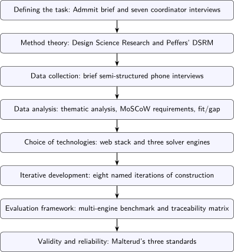
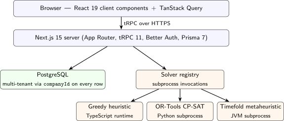

![[Picture]](main0x.svg)
Norwegian transport companies operate without systematic visibility into resource utilization: overtime is handled reactively, idle time between assignments is invisible in current tools, and load balancing depends on the traffic coordinator’s memory. This thesis asks how an algorithm-assisted resource planning platform can improve resource utilization in Norwegian transport companies while remaining accountable to the coordinator who operates it.
The thesis follows Design Science Research, applied through Peffers’ six DSRM activities and eight named iterations. The empirical foundation is semi-structured interviews with seven traffic coordinators and transport managers across Norway, analysed through Braun and Clarke’s six-phase thematic analysis. The artefact, Ressursplanlegger (RP), is a Next.js + tRPC + PostgreSQL platform with three optimisation engines (a greedy heuristic, OR-Tools CP-SAT, and Timefold) and a Gantt-style drag-and-drop human-in-the-loop timeline. The evaluation framework benchmarks the engines against three synthetic datasets and is complemented by a requirements traceability matrix.
The interviews surface a resource-utilization visibility gap as the primary finding and an operator-vs-owner asymmetry that mirrors Bainbridge’s Ironies of Automation: demand for automation is articulated by owners and by Admmit, not by the coordinators who must run any such system. The discussion organises primary findings under three locked anchor concepts: Efficiency (visibility gap, asymmetry, multi-engine benchmark), Control (four-layer human-in-the-loop theory applied to override authority), and Adaptability (configurable soft-constraint weights across companies). Twelve hierarchical limitations (L1 through L12) bound what the thesis can claim, the most consequential being the absence of production deployment (L6) and of user testing with coordinators (L8). The closing claim is that algorithm-assisted planning under stakeholder asymmetry in Norwegian transport is feasible when the operator keeps authority over every algorithm-generated assignment, when the system explains itself in the operator’s vocabulary rather than in solver internals, and when what distinguishes one company from another lives as configuration rather than as code.
Norske transportbedrifter mangler systematisk innsikt i hvordan ressursene faktisk blir brukt. Overtid håndteres reaktivt, dødtid mellom oppdrag er usynlig i dagens verktøy, og lastfordeling mellom sjåfører er avhengig av trafikkleders hukommelse. Denne masteroppgaven undersøker hvordan en algoritmestøttet ressursplanleggingsplattform kan bedre ressursutnyttelsen i norske transportbedrifter samtidig som den forblir ansvarlig overfor trafikklederen som bruker den.
Oppgaven følger paradigmet Design Science Research, anvendt gjennom Peffers’ seks DSRM-aktiviteter og åtte navngitte iterasjoner. Det empiriske grunnlaget er semistrukturerte intervjuer med syv trafikkledere og transportledere i norske bedrifter, analysert gjennom Braun og Clarkes seks faser for tematisk analyse. Det utviklede artefaktet, RP, er en plattform bygget på Next.js, tRPC og PostgreSQL med tre optimeringsmotorer (en grådig heuristikk, OR-Tools CP-SAT og Timefold) og et Gantt-basert dra-og-slipp-tidsskjema med menneske-i-løkken. Evalueringsrammen sammenligner motorene mot tre syntetiske datasett og kompletteres av en kravsporbarhetsmatrise.
Intervjuene avdekket et gjennomgående synlighetsgap i ressursutnyttelse, og en operatør-mot-eier-asymmetri som speiler Bainbridges Ironies of Automation: behovet for automatisering uttrykkes av eiere og av Admmit, ikke av trafikklederne som må kjøre systemet daglig. Diskusjonen organiserer hovedfunnene under tre låste forankringskonsepter, brukt verbatim på engelsk: Efficiency (synlighetsgapet, asymmetrien, sammenligning av løsere), Control (firelagstolkningen av menneske-i-løkken anvendt på override-autoritet) og Adaptability (konfigurerbare myke-skranke-vekter på tvers av bedrifter). Tolv hierarkiske begrensninger (L1 til L12) avgrenser hva oppgaven kan hevde, der de viktigste er fraværet av produksjonsutrulling (L6) og brukertesting med trafikkledere (L8). Konklusjonen er at algoritmestøttet planlegging under interessentasymmetri i norsk transport er gjennomførbar når operatøren beholder autoritet over hver enkelt tildeling, systemet forklarer seg i operatørens vokabular, og det som skiller én bedrift fra en annen lever som konfigurasjon, ikke som kode.
This thesis was written as part of the course IDATT2901 Bachelor Thesis in Computer Engineering at NTNU, spring 2026.
We would like to thank Ali Alsam for his guidance, and Gunnstein Koch, Bente Bakke, and the rest of the Admmit team for their support throughout the project.
Trondheim, May 2026
| Embret Olav Rasmussen Roås | Mikael Stray |
The following is the original assignment statement received from Admmit through NTNU’s bachelor task pool, project code OPG29, before work on the project commenced. The statement was provided in Norwegian; the translation below preserves the four success criteria the brief lists.
“We will develop a new resource planner as part of our complete suite of administrative tools. The aim of the planner is to make it easy for current and new customers to plan projects in a way that secures sound project execution, optimal use of resources, and compliance with all applicable legal requirements. The tool must be intuitive and simple, must ensure that all assignments are carried out in accordance with applicable requirements, must ensure that all resources are used optimally, and must ensure that all planned projects can be executed in line with regulation. The resource planner forms part of a larger system and must be able to communicate with existing databases such as vehicle and equipment overviews and employee rosters.”
The brief fixed the topic but not the empirical foundation: how Norwegian traffic coordinators actually plan a day’s assignments, and what software they use today, were left to the project to investigate. Section 3.1 sets out how the brief was operationalised through seven semi-structured interviews with traffic coordinators and transport managers across Norway, and Section 3.2 maps the result onto Peffers’ six DSRM activities.
Consider a small transport business: one owner-operator, one vehicle. When a customer calls with goods to be moved, the operator checks the calendar, accepts the job if time is available, and refuses it if not. Simplicity disappears as soon as two requests collide. If two customers want their goods moved at the same hour, only one can be served, and accepting the higher-paying job seems natural. But suppose a third call later in the day fits alongside the cheaper job that was refused: the operator who accepted both short jobs earns more than the one who took the single bigger one, and keeps both customers. Decisions can no longer be made one call at a time.
Other considerations press on the puzzle, and they fall into two kinds. Soft constraints, also called priorities, are preferences the operator follows where possible: avoid out-of-town runs that conflict with family commitments, retain a Friday regular, favour familiar areas. Any of them can give way when a better job arrives. Hard constraints do not give way: the legal limit on consecutive driving hours, the capacity of the vehicle, the customer’s delivery window. Arranging a working day so that revenue is high, hard constraints are respected, and soft constraints are honoured is an optimisation problem with multiple competing objectives.
The problem changes shape when the business grows. A second vehicle and a second driver double the calendar: each incoming call demands not a yes or no but an assignment, with the rule that two assignments cannot go to the same driver at the same time. New constraints enter, like one driver who holds the licence for transporting dangerous chemicals and is the only one who can take the load of paint thinner that arrives every Wednesday. At the scale of one hundred drivers, fifty vehicles, and a thousand orders a week, the puzzle no longer fits on a single desk. Companies in this range, tens to hundreds of drivers and dozens of vehicles, are the ones this thesis is concerned with; they correspond to the customer base of Admmit, the Norwegian software firm that offered the thesis as a bachelor task. The owner of such a company has long since stepped out of the cab, and a new role sits between the customers ringing in and the drivers behind the wheel: a traffic coordinator, whose entire day is the puzzle.
Coordinators of this kind sit in transport companies across Norway. In 2025, Norwegian transport companies moved approximately 252 million tonnes of goods on behalf of their customers (Statistisk sentralbyrå, 2026), and behind every load a coordinator made the same kind of decision the one-vehicle operator made, at greater scale and under tighter time pressure. Those decisions land directly on the bottom line: a driver assigned past the weekly hours cap turns the next load into overtime, a vehicle waiting between two assignments incurs cost without revenue, and the heaviest workload concentrated on the same few drivers produces fatigue and turnover.
At a hundred vehicles, the puzzle the one-vehicle operator could carry in their head no longer fits there. The data needed for a good plan lives in several places at once, and no view assembles it. A further part of it lives nowhere at all: which routes are difficult and who is familiar with them, which licence allows which load, which vehicle suits which job, which customer must not be refused. Knowledge of this kind, acquired on the job and rarely written down, is termed tacit knowledge; it is what no system can read from a screen and what makes the coordinator irreplaceable. The software the coordinator currently operates does not close the remaining gap: the two commercial Norwegian Transport Management Systems named by the interviewed companies, Timpex and Opter, handle order management and invoicing but neither produces an assignment plan automatically, and other companies plan from internal tools, spreadsheets, memory, or telephone calls. None of the systems in current use takes on the assignment planning itself: the decision of which driver and vehicle perform which order.
What the coordinator does mentally is, in effect, an algorithm. Rules such as “this driver is close to overtime, assign the load to another” or “this vehicle is too small for that pallet count, substitute it” are applied repeatedly, never written down, never compared against alternatives. A computer can apply the same rules at greater scale, hold more constraints in view, and search through more candidate plans than a person can in comparable time. The aim is not to replace the coordinator but to take the part of the puzzle a computer can solve and leave the part that depends on tacit knowledge to the person who carries it.
Ressursplanlegger (hereafter RP) is the artefact this thesis builds and evaluates: an algorithm-assisted planning platform that proposes a plan covering a horizon set by the coordinator. The coordinator reviews each assignment in a calendar-style view, free to change or remove any of them, and the plan takes effect only after their approval.
Three concerns recurred across the interviews with traffic coordinators and the dialogue with Admmit, and are used as guiding concepts throughout the thesis. Efficiency is what RP must measurably improve; Control is what RP must preserve in the coordinator’s hands; Adaptability is what RP must support across companies.
The owner of the hundred-vehicle business asks the same question at the end of every week. How much overtime did the company run? How many vehicle-hours sat idle between assignments? Was the workload spread evenly across drivers, or did the same few people carry the weight again? Efficiency is whether RP makes those quantities visible, and whether the coordinator can move them in the right direction: less overtime, less idle time, a more even distribution of work.
The one-vehicle operator inspected every job before accepting it. The coordinator of a hundred-vehicle fleet cannot inspect a thousand jobs a week one by one, but a system that issued plans without their approval would not be acceptable either. Control is the property that every algorithm-generated plan is reviewed before it takes effect: trust grows only where control is real.
Two transport companies of comparable size may operate on entirely different rules. The first has ten drivers in a single depot and plans one day at a time; the second has several dozen vehicles across multiple branches and plans a week ahead. Adaptability is the capacity of the system to fit both, with operational rules and priorities adjusted per company through configuration rather than through code changes.
The puzzle from Section 1.1 supplies the questions this thesis must answer.
To what extent can an algorithm-assisted planning platform automate the traffic coordinator’s planning work in Admmit’s customer companies in a way that improves resource utilization (reducing overtime, idle time between assignments, and uneven driver load) and is perceived as useful by the coordinator who runs it?
The main question is one of balance. More automation moves the utilization numbers further but, taken too far or in the wrong way, erodes the tacit knowledge and override authority that make the coordinator irreplaceable. The question is not whether to automate, but how far automation can go before it costs more than it gives.
SQ1: To what extent does RP reduce overtime, idle time, and uneven driver load below the level produced by current planning practice in Admmit’s customer companies?
SQ1 is the Efficiency side of the balance: do the owner’s end-of-week numbers come down once the coordinator works from RP rather than from order tools, spreadsheets, and memory? ğ5.1.1 answers it against a benchmark of synthetic datasets that approximate the fleet ranges of the interviewed companies, with the baseline drawn from interview accounts of how planning is done at present.
SQ2: Through what kind of interface and process can the traffic coordinator review and override every algorithm-generated assignment without making the planning workflow heavier than current practice?
SQ2 is the Control side: how can the one-vehicle operator’s reflex inspection be reproduced for a fleet coordinator, when there are a thousand jobs a week and much of what argues for or against an assignment is knowledge the algorithm cannot read off the screen? ğ5.1.2 answers it by examining the timeline, the override controls, and the conflict view in RP.
SQ3: Through which configurable elements can RP serve companies that differ in operational rules, fleet size, and planning horizon, without changes to the code?
SQ3 is the Adaptability question: what has to be configurable for RP to fit the ten-driver depot and the multi-branch fleet without code changes? ğ5.1.3 answers it against the per-company configuration of soft-constraint weights and the planning horizon.
| ID |
Question |
Anchor |
Answered in |
Bounded by |
| RQ |
Balance between automation gains and coordinator-perceived utility |
All three |
Section 6.2 |
All L1–L12 |
| SQ1 |
Reduction in overtime, idle time, and uneven driver load |
Efficiency |
L1, L2, L3, L4 |
|
| SQ2 |
Interface and process for review-and-override authority |
Control |
L8, L10 |
|
| SQ3 |
Configurable elements that fit different companies |
Adaptability |
L5, L6, L7, L9, L11, L12 |
RP turns a list of orders for a given period into a plan that specifies who drives what, in which vehicle, and when. The period is set by the coordinator and ranges from a single day to a week or longer, since the companies the system has to accommodate do not all plan on the same horizon. The plan is produced by an automated solver, which the coordinator also picks: a tight time budget returns a quicker plan suited to the morning rush, a longer budget a more thoroughly searched one suited to the previous evening’s planning session. The system holds the information the planning step requires: which drivers are employed and what they are qualified to do, which vehicles the company has and what each can carry, and when employees are working.
The priorities the solver weighs are tuned per company through configurable weights in the dashboard: the cost of overtime relative to idle time, the strength of workload balancing, the value of keeping a job within a driver’s home region. The same algorithm on the same data returns different plans for two companies, because they have asked it to optimise different things.
The following capabilities are deliberately out of scope, since they came up early in the project and could otherwise be assumed by default:
The thesis is organised as follows:
RP was built in stages, starting from the bachelor task Admmit offered. The task came with two requirements set by Admmit on behalf of its customers: an algorithm that proposes the plan, and a human-in-the-loop workflow that leaves the coordinator in charge of every assignment. Beyond those two requirements, the shape of the planning problem was open at the start; the visibility gap, the role of tacit knowledge, and the limits of the existing software were learned from an outreach phase of interviews with traffic coordinators in Norwegian transport companies, conducted alongside an ongoing dialogue with Admmit. The construction and evaluation followed a Design Science Research approach: an artefact built to address a practical problem, evaluated against the problem it was built to address, refined across iterations, and reflected on in writing. With more time the project would have run a second round of interviews and a fuller iteration cycle on the control surface, testing the balance against operating coordinators rather than against the team’s own reading of the first-round transcripts. Chapter 3 describes the method and the iterations in full.
The artefact and the supporting material referenced from the chapters that follow are available as listed below.
This chapter develops four theoretical foundations the rest of the thesis stands on. Section 2.1 sets out the scheduling problem the algorithm solves and names the utilization dimensions grouped under Efficiency. Section 2.2 sets out the human-in-the-loop pattern under which the coordinator runs the system, and names Control as a structural requirement of that pattern. Section 2.3 places RP inside the existing software category and identifies the planning gap RP fills. Section 2.4 sets out the research paradigm that frames both the artefact and the knowledge claims made about it. Of the four, Section 2.2 carries the most theoretical weight: the control argument the rest of the thesis turns on is built there.
Many everyday jobs come down to scheduling. A dentist fits one-to-one appointments with their patients into the hours of the working day. A waiter routes the next free server to the next ready table. A parent juggles pickup times across two children’s after-school activities. Each is a small version of the same problem: matching a limited set of resources to tasks within a specific time window, under rules about who can do what. Pinedo (2016) defines scheduling more formally as allocating resources to tasks over time, subject to given constraints, with the goal of optimising one or more objectives. The coordinator’s puzzle from Section 1.1 sits inside this definition.
In scheduling vocabulary, the coordinator’s puzzle is an assignment problem in which each task must be matched with two resources, a driver and a vehicle, that stay paired for the assignment. Pairing makes the problem harder than the single-resource case that dominates (Pinedo, 2016), because a candidate plan now has to satisfy compatibility for two resource types at the same moment.
Producing a plan that legally fits every assignment is one bar; producing one that uses the company’s drivers and vehicles well is a different one, and harder. Ernst et al. (2004) review the personnel-scheduling literature across application domains and identify overtime hours, idle time, and workload balance as the utilization dimensions on which plans are judged. None of these can improve before the coordinator can see them, so visibility is the precondition any planning system at the assignment step has to deliver before any of these dimensions can move.
The hard and soft constraints introduced in Section 1.1 are formalised in scheduling theory as follows. Hard constraints bound feasibility: a plan that violates one is not a valid plan. Each violated soft constraint adds a penalty to the score the solver tries to minimise (Ernst et al., 2004; Rossi et al., 2006), so the solver searches for a plan that respects every hard constraint and incurs the smallest total soft-constraint penalty. Each penalty has a weight, and different companies can give the same constraint different weights depending on what matters to them. The thesis groups this configurability under Adaptability.
Even with hard and soft constraints sharply defined, finding a guaranteed-best plan is out of reach in practice. No algorithm is known to solve every instance of this problem in time that grows polynomially with the input size, and one is widely believed not to exist; the problem is, in the standard term, NP-hard (Pinedo, 2016; Rossi et al., 2006). As the number of drivers, vehicles, and assignments grows, the time required to search every possible plan grows so fast that exhaustive search stops being practical even on the daily fleets the interviewed companies operate. Practical scheduling systems therefore give up looking for a guaranteed-best plan and use solvers that return a good plan within a fixed time budget.
When a problem is NP-hard, the practical question is no longer whether to find a guaranteed-best solution but which kind of algorithm to use to find a good one. Several broad styles exist. A teacher putting together a class timetable, who picks the first room that fits each lesson and moves on, is using one. A person solving a sudoku, who writes down what each cell could hold and rules out options as they go, is using another. A person editing a complicated calendar, who tries small changes and keeps the ones that improve the schedule, is using a third. The personnel-scheduling literature names these three styles formally. Constructive heuristics, called dispatching rules in Pinedo (2016), build a plan one assignment at a time according to a priority rule; they are fast, but can lock onto a locally good plan and miss a much better plan reachable only by reordering earlier choices. Constraint programming, like the sudoku approach, formalises the same intuition: Rossi et al. (2006) describe how a CSP solver writes down what each variable could hold and rules out options through propagation and backtracking, returning near-optimal plans within a configurable time budget at the cost of higher modelling effort upfront. Metaheuristics improve a candidate plan by repeatedly modifying it and keeping the better candidate. Glover (1986) introduces the term metaheuristic for this style and presents tabu search as a strategy that records recent moves on a tabu list so the search cannot cycle back through the same local optimum; Burke and Bykov (2017) present late-acceptance hill climbing as an alternative that compares each candidate against the solution as it stood several iterations earlier rather than against the current one, with the history length as the only tunable parameter. Mathematical programming, a fourth body that dominates the rostering literature by volume, is rarely used on its own for messy real-world instances because their constraints and objectives resist clean mathematical formulation (Ernst et al., 2004, pp. 17–18).
The three families differ along two axes: speed (how quickly they return a candidate plan) and quality (how close that plan is to optimal). Heuristics are fastest but can lock in early; constraint programming searches systematically but takes longer to set up; metaheuristics keep improving as long as time allows. Table 2.1 summarises how each family sits along these two axes and the modelling effort each requires up front. Which family fits depends on the time budget the coordinator can spare and the quality the plan has to reach.
| Family |
Speed |
Quality |
Modelling effort |
When it fits |
| Constructive heuristic (greedy) |
Milliseconds |
Locally good; can lock in early |
Low |
Need an immediate baseline plan; small instances |
| Constraint programming (CP-SAT) |
Configurable budget |
Near-optimal within budget |
Medium |
Mid-size instances with mixed hard/soft constraints |
| Metaheuristic (tabu, SA, late-acceptance) | Continues with time | Improves over time; scale-independent in LAHC | Low–medium | Large instances where CP saturates within the budget |
| Mathematical programming |
Slow on messy cases |
Optimal if the model fits |
Very high |
Clean structured problems; rare for messy real-world rostering |
Solver capability alone, however, says nothing about who reads the resulting plan, who can change it, and on what authority. Section 2.2 turns to that question.
A nurse confirms a medication dose the hospital system flags. A pilot accepts an autopilot suggestion before the autopilot acts. In each case an automated process generates a recommendation, and a human exercises authority over whether it takes effect. The human factors literature calls this configuration human-in-the-loop. A traffic coordinator who reviews and approves every plan the algorithm produces is operating in exactly the same pattern.
Parasuraman et al. (2000) formalise this division of authority on a ten-level scale of automation for decision and action selection. The scale runs from level 1 (fully manual) to level 10 (fully autonomous), with intermediate steps that progressively transfer authority from human to machine. Level 4 is “the computer suggests one alternative”, level 5 is “executes that suggestion if the human approves”, and level 6 is “executes automatically unless the human vetoes within a time window”. The level a system sits at is a design choice with real consequences. At level 5, the operator’s approval is required for the system to act. At level 6, the operator has to step in to stop something the system would otherwise do on its own.
The owner-coordinator split sketched in Section 1.1 has a structural answer in Bainbridge (1983). Bainbridge’s central observation is that the people who specify automation are usually not the same as the people who must operate it: the owner pays for the system and asks for it, while the worker on the floor lives with it day to day. The human-in-the-loop operating model is the design move that satisfies both at once: the algorithm produces the automation for the system, and the operator retains review-and-override authority over each result it produces.
Authority is one thing. Whether the coordinator trusts what the algorithm produces is another, and a coordinator who has the authority to override the algorithm may still leave it unused if they do not trust what it produces. Hoff and Bashir (2015) review 127 studies of human-automation trust from 101 articles, and group their findings into a three-layer model of dispositional, situational, and learned trust (Hoff & Bashir, 2015, p. 413). A coordinator who instinctively distrusts software (dispositional), who has been burned by a past system (learned), and who is rushed at 7am on Monday (situational) brings three different trusts to the same screen. Two coordinators using the same plan generator may therefore hold different levels of trust at the same moment, and the same coordinator’s reliance on the algorithm shifts across days. Hoff and Bashir also report that early errors damage trust more than later errors do (Hoff & Bashir, 2015, p. 426), which has a concrete consequence for deployment: an operator’s first week with such a system weighs more in trust formation than the months that follow. The aim is calibrated trust, where the coordinator neither rubber-stamps the algorithm nor refuses to use it.
For the coordinator to trust the algorithm in a way that matches how good it actually is, they need to understand what it is doing. Miller (2019) surveys explanation in the social sciences and notes three things most automated systems get wrong. First, explanations are contrastive: when people ask why something happened, they usually mean why it happened rather than the alternative they had in mind. Second, explanations are selective: people want one or two key reasons, not the full causal chain. Third, explanations are social: explaining is a kind of communication, so a good explanation fits what the listener already knows (Miller, 2019, p. 3). Translated to a planning algorithm, the coordinator’s question is rarely “why was this assignment generated?”. It is “why was this driver assigned, rather than the one I would have picked?”. Miller argues that explanation belongs in the interface itself, and that “trust is lost when users cannot understand traces of observed behaviour or decisions” (Miller, 2019, p. 3). The implication for any planning algorithm is that reasons must be expressed in the operator’s working vocabulary, not in raw constraint weights or solver internals, and those reasons belong next to the controls used to override.
J. D. Lee and See (2004) define trust as the user’s belief that the system will help them reach their goals in a situation where they cannot fully predict what it will do (J. D. Lee & See, 2004, p. 54). Their key argument is that the design goal is the right amount of trust, not the maximum amount. A coordinator who accepts every plan without checking it (Lee and See call this misuse) is over-trusting; a coordinator who plans entirely by hand even when the solver works well (disuse) is under-trusting. To help a user calibrate, Lee and See recommend that the system reveal its past performance, show how it works, and explain its purpose in terms that connect to the user’s goals (J. D. Lee & See, 2004, p. 74). The risk Lee and See point to is concrete: if coordinators do not understand or trust the algorithm, they will not use it, and the visibility gap from Section 2.1 stays open regardless of how good the solver is. Chapter 5 returns to this adoption question.
Table 2.2 summarises what each of the five bodies (Bainbridge, Parasuraman, Lee and See, Hoff and Bashir, Miller) contributes to the design of an HITL system, and where in this thesis each contribution is referenced.
| Source |
Year |
Contribution |
Where applied |
| Bainbridge |
1983 |
Owner-vs-operator articulation asymmetry; ironies of automation |
|
| Parasuraman et al. |
2000 |
Ten-level scale of automation for decision and action selection |
Section 5.1.2; RP sits at level 5 |
| Lee & See |
2004 |
Appropriate trust as the design goal; misuse and disuse as failure modes |
|
| Hoff & Bashir | 2015 | Three-layer trust model (dispositional, situational, learned); early errors weigh more | Section 2.2, Section 5.1.2, Section 5.8 (first-week recommendation) |
| Miller |
2019 |
Explanation as contrastive, selective, social |
Section 2.2, Section 5.1.2; deviation viewer + post-solve summary |
The five bodies translate into concrete design constraints on RP’s HITL interface. The planning timeline shows the algorithm’s suggested plan in the same Gantt view the coordinator uses for manual work, so the suggestion is open to inspection rather than presented as a finished output. After a solver run, a summary panel reports the solution score and counts of hard and soft violations, exposing process and performance in the sense Lee and See describe. A separate deviation view lists each active conflict by type, affected assignment, and affected resource, so a coordinator who disagrees with the algorithm can locate the contested assignment and decide whether to override. Override is intentionally low-friction: dragging an assignment block to a different employee row reassigns it, and conflicting changes save with a warning rather than a block. A blocking validator would tell the coordinator that the system, not the coordinator, holds final authority, which is the configuration Bainbridge warns against and the one Control forbids. Soft-constraint weights are exposed per company so that a coordinator’s notion of a good plan can be adjusted without code changes, and the choice of solver engine and time budget is exposed at the point of plan generation so the system’s capability limits are visible before the plan is read. Sections 3.6.5 to 3.6.7 document how each layer was built into the artefact.
The two systems named in Section 1.1, Timpex and Opter, are commercial implementations of a wider category called a Transport Management System (TMS). Griffis and Goldsby (2007) define a TMS as information technology used to plan, optimise, and execute transportation operations before, during, and after the physical movement of goods (Griffis & Goldsby, 2007, p. 19). Heinbach et al. (2022) define it similarly, as software for assigning shipments to fleet resources (Heinbach et al., 2022, p. 811).
Inside that label, the picture is not uniform. What a TMS actually offers depends on the vendor, and whether a transport company uses one at all depends on the company. An older North American study by Griffis and Goldsby (2007) found that of the firms in its 2007 sample without any TMS, half managed transportation entirely manually, while the other half relied on partial or legacy IT (Griffis & Goldsby, 2007, p. 26). The sector is therefore a patchwork, with different vendors covering different ground and a substantial share of operations running without dedicated planning software at all.
Even where a TMS is in place, one part of the operation is missing from the category as a whole: the upstream planning step that decides which driver and vehicle perform which assignment. Griffis and Goldsby (2007) observe that most TMS offerings centre on the individual shipment as the unit of analysis and lack the ability to optimise multi-load shipments, leaving load consolidation as a manual activity (Griffis & Goldsby, 2007, p. 27). Heinbach et al. (2022) reach the same conclusion: TMS products focus on shipment-level business activities, while other digital platforms add capabilities outside that focus (Heinbach et al., 2022, p. 808). What existing systems cover, in short, is order management, freight billing, and shipment-level execution; what is missing is the upstream planning step between an order existing and a specific driver and vehicle being assigned to perform it.
How one piece of software can serve many companies whose rules differ has its own literature. Mietzner et al. (2009) describe a pattern in which all customers run the same system, but each adjusts a set of settings to fit their own rules. The software ships once; what differs between companies is the per-company configuration, not the code. The pattern is the standard way one product serves customers whose operational rules differ.
An engineer who builds a new tool to fix a specific problem on a shop floor, and studies how the tool behaves once it is in use, is doing Design Science Research (DSR). The paradigm treats the artefact and the knowledge produced about it as one combined contribution. Wieringa (2014) puts it concisely: design science is building artefacts to improve their setting, and studying them as you go (Wieringa, 2014, p. 3).
Hevner (2007) structures the same work as three linked cycles. The relevance cycle imports requirements and acceptance criteria from the application environment, the rigor cycle draws on existing scientific knowledge and contributes new knowledge back to it, and the design cycle iterates internally between constructing and evaluating the artefact (Hevner, 2007, pp. 88–90). Peffers et al. (2007) structure the same paradigm as a procedural model. Their Design Science Research Methodology (DSRM) specifies six activities: problem identification and motivation; objectives for a solution; design and development; demonstration; evaluation; and communication (Peffers et al., 2007, p. 46). The two framings are complementary: the cycles describe what must be present, the activities describe what is done. Chapter 3 applies the DSRM activities step by step to this project.
DSR is one of several paradigms an IS study could choose. Orlikowski and Baroudi (1991) group IS research into three philosophical stances: positivist (assuming an objective social reality measurable with structured instruments), interpretive (treating organisational reality as socially constructed and reading meaning through participants’ frames), and critical (Orlikowski & Baroudi, 1991, p. 5). A purely positivist study fits population-level measurement of a deployed system, but cannot on its own justify building a new artefact whose primary contribution is the design knowledge embedded in it. A purely interpretive study fits rich description of coordinator practice, but cannot on its own check a runnable artefact’s behaviour against external criteria. DSR sits between the two, and the artefact itself is examined against those requirements.
Within DSR, what ’examined’ means depends on which standard is applied. Wieringa (2014) distinguishes validation, which predicts whether a deployed system would do what stakeholders want, from evaluation, which observes a deployed system in actual use (Wieringa, 2014, pp. 31, 34). In validation, the researcher experiments with a model of how stakeholders would use the artefact; in evaluation, those stakeholders use the artefact independently of the researcher. Hevner (2007) treats lab testing before field testing as standard practice (Hevner, 2007, p. 91), so the choice between validation and evaluation is set by which stage of the relevance cycle a study has reached, not by which yields stronger evidence in the abstract.
Three further bodies of theory shape how the artefact is read in Chapter 5: the literature on technology adoption, on software sustainability, and on the ethics of algorithmic decision-making.
A traffic coordinator considering whether to use a new planning system is weighing four things: will it make my work better, will it be easy to use, do my colleagues use it, and is help there when something goes wrong. Information systems research formalises this judgement. Venkatesh et al. (2003) consolidate eight earlier acceptance models into the Unified Theory of Acceptance and Use of Technology (UTAUT). The four constructs of the model match the four questions: performance expectancy, effort expectancy, social influence, and facilitating conditions. Two coordinators with the same system in front of them can reach opposite adoption decisions because the four answer differently for each.
A change to a planning system has effects beyond the planning task itself: how operators feel about their work, how customers receive their goods, how vehicles use fuel. The Sustainability Awareness Framework (SusAF), introduced by Becker et al. (2015) and developed by Duboc et al. (2020), gives a way to think about these effects. SusAF organises sustainability across five dimensions (technical, economic, social, individual, environmental) and three orders of effect: immediate (what the system does directly), enabling (what becomes possible through ongoing use), and structural (long-term shifts at the level of an industry or society). The framework’s value is forcing the analysis across all five dimensions, not only the one a designer naturally attends to. The United Nations 2030 Agenda (United Nations General Assembly, 2015) provides a related mapping target: seventeen Sustainable Development Goals against which the effects of an artefact can be located.
An algorithm that assigns drivers to jobs across a fleet makes choices with consequences for the drivers it routes. Three lines of literature ask what that means ethically. Mittelstadt et al. (2016) survey ethical concerns raised by algorithmic decision-making; the two most relevant here are decisions whose grounds the operator cannot inspect, and decisions that systematically disadvantage some over others. Martin (2019) asks who is answerable when an algorithm-generated decision goes wrong, and argues that responsibility cannot rest with the algorithm itself; it must rest with a person or organisation, and the more inscrutable the algorithm, the more responsibility falls on its designer. M. K. Lee (2018) documents how algorithmic management affects working life: when an algorithm tracks, schedules, and evaluates workers, it can tighten worker discretion in ways that erode the qualitative experience of work, even when the system produces measurable improvements. The three together name the questions any algorithm-assisted planning system has to engage with.
Two strands of work ran in parallel through this project: a consultation with traffic coordinators that anchored the artefact in current planning practice, and the construction of the artefact itself. This chapter walks through how those two strands connected. Section 3.1 describes how the bachelor task was defined and where the empirical foundation came from. Section 3.2 sets out the research frame the project worked inside. Sections 3.3 and 3.4 cover how the interview material was collected and analysed. Section 3.5 introduces the technology stack on which the artefact rests, and Section 3.6 reports the eight iterations through which the artefact took shape. Sections 3.7 and 3.8 close the chapter with how the artefact is evaluated and how the validity of the surrounding research is bounded.

Admmit, a Norwegian software firm building products for the transport sector, offered a bachelor task through NTNU under project code OPG29. The task description asked for a working prototype of a planning platform that could help Norwegian traffic coordinators assign drivers and vehicles to the day’s transport assignments. The two-student team accepted the task and committed to delivering both the artefact, named RP, and the thesis that surrounds it. From that point, two workstreams ran in parallel: building the platform and conducting the research that would inform its design.
The task description fixed the topic but not the empirical foundation, and the team needed answers before any planning interface could be designed responsibly. Two questions in particular: how do Norwegian traffic coordinators actually plan a day’s assignments, and what software, if any, do they use today? Neither question could be answered from the desk. The team turned to Admmit’s customer roster, called seven traffic coordinators and transport managers directly, and conducted brief semi-structured calls of roughly fifteen minutes each. The calls were spread across the first half of March 2026 rather than compressed into one day, so prompts could be adjusted between calls and gaps in earlier conversations probed in later ones. Vendor names surfaced gradually through “what tools do you use” questions: several companies described mixes rather than single-vendor adoption, with Timpex, Opter, and internal tools appearing in different combinations across the seven companies interviewed.
Admmit had already specified two requirements before the first call. The first was Human-in-the-Loop (HITL) operation: the algorithm proposes a plan, and the coordinator can review and override every assignment in it. The second was a multi-tenant architecture, meaning one deployed system serving several customer companies, with each company’s data and configuration isolated from the others. The seven coordinators voiced a clear preference for a system that suggests a plan they can correct rather than one that decides for them, which matched the HITL requirement. Their accounts of differing operational rules across companies matched the case for the multi-tenant architecture. Admmit had the requirements; the seven companies interviewed validated them.
Two paradigms could have framed this work, and neither would have fit alone. A purely positivist study would need to measure overtime and idle-time effects across many Norwegian transport companies in production deployment, which the project’s stage does not support. A purely interpretive study would describe coordinator practice in rich detail without ever producing the runnable platform Admmit’s task required. Design Science Research takes care of both at once: an artefact plus the knowledge it embodies. The DSR foundation, together with the two alternatives it is compared against, is set out in Section 2.4. RP is precisely such an artefact.
The methodology used in this thesis is Peffers et al. (2007)’s Design Science Research Methodology (DSRM), which structures DSR as six activities: problem identification and motivation, objectives for a solution, design and development, demonstration, evaluation, and communication (Peffers et al., 2007, p. 46). Peffers note that the activities are nominally sequential rather than strictly so; researchers are not expected to walk in order from activity 1 through activity 6 (Peffers et al., 2007, p. 56).
The six activities mapped onto this project as follows. Problem identification and motivation: the seven coordinator interviews surfaced a recurring pattern of reactive overtime, invisible idle time, and memory-based load balancing, which Admmit’s task description framed from the owner side. Objectives for a solution: the objectives are stated under the three locked anchor concepts. Efficiency is realised by the artefact reducing overtime, reducing idle time between assignments, and reducing uneven load between drivers. Control is realised as the coordinator’s authority to review and override any algorithm-generated assignment. Adaptability is delivered through configurable constraint weights and per-company assignment rules within a single deployed instance that can serve companies with different operational rules. Design and development: the artefact was built across the eight iterations reported in Section 3.6. Demonstration: a multi-engine benchmark on synthetic datasets covering the realistic fleet ranges of the seven interviewed companies, set out in Section 3.7. Evaluation: an asymmetric framework that tests Efficiency directly through the benchmark while leaving Control and Adaptability as forwarded validation work. Communication: this thesis (addressed to the academic audience at NTNU) and a written recommendation to Admmit covering deployment readiness.
The six activities did not run in Peffers’ nominal order. Peffers note four possible entry points into the DSRM cycle, and one of them is objective-centered initiation, where an industry or research need fixes key objectives before activity 1 is complete (Peffers et al., 2007, p. 56). RP fits that pattern. Admmit’s task fixed HITL and the multi-tenant architecture, the artefact elements that realise Control and Adaptability, before activity 1 was complete, and the eight iterations of activity 3 ran in parallel with later refinements of the objectives.
The empirical input for the Problem-Identification step came from a single instrument: brief semi-structured interviews with traffic coordinators and transport managers across seven Norwegian transport companies. The form was chosen for its balance of openness and structure. Openness let themes the team had not anticipated surface, and structure let the same five guide topics be compared across calls. A fully structured questionnaire would have closed off the openness; a fully open conversation would have lost the comparability.
The seven coordinators were selected purposively from Admmit’s customer roster. The project required coordinators in the planning role at companies where algorithm-assisted planning is plausibly relevant, and Admmit’s customer base supplied that population directly. The companies span small operators with around eight to twenty drivers up to a multi-department fleet of around forty-five vehicles, range geographically from Bergen and Mo i Rana to Lakselv and Tana, and cover the systems used in the field: Timpex, Opter, internal or custom tools, and fully manual planning. Table 3.1 summarises the consultation pool. The self-selection that follows from recruiting through Admmit’s customer roster is a known limitation, named as L2 in Section 5.5.
| Company |
Region |
Approx. fleet |
Current planning system |
Stance on automation |
| Bergen Bulk Transport |
Bergen |
8–20 drivers |
Manual (phone, memory) |
Sceptical |
| Harlem Solutions |
— |
— |
Opter |
Sceptical |
| Norlog Mo i Rana |
Mo i Rana |
— |
Timpex |
Positive |
| Norlog Lakselv |
Lakselv |
— |
Timpex |
Positive |
| Norlog Tana | Tana | — | Timpex (with scanning competence) | Positive |
| Ottem |
— |
∼45 vehicles, 3 departments |
Internal order system |
Sceptical |
| Nordic Crane |
— |
Crane and transport divisions |
Custom (own system) |
Partial |
Five guide topics anchored every conversation: current tools and workflow, assignment criteria, sick-leave handling, attitudes to automation, and adoption criteria. Each topic opened with a broad question, with prompts only where the coordinator’s first answer left an obvious gap. That kept the calls comparable on topic coverage while preserving the open-question structure the form requires. No separate scripted questionnaire was used beyond this guide.
The seven calls were conducted by phone across the first half of March 2026, in Norwegian, with each call lasting approximately fifteen minutes for a cumulative interview time of roughly 105 minutes. Phone was the practical choice given the geographic spread of the coordinators and the brief format the consultation could realistically ask of working coordinators recruited cold. Norwegian was chosen because all seven coordinators were native speakers, and the topic vocabulary (TMS terminology, regulatory references, sick-leave handling) is naturally expressed in Norwegian. The fifteen-minute target balanced cross-topic coverage against the realistic attention budget of a working day. The brief duration is named alongside the sample size as L1 in Section 5.5.
Recordings were transcribed automatically, and the segments used for analysis were manually corrected against the audio. Manually transcribing 105 minutes of audio would have been more work than the analysis required.
The interviews were conducted as an industry consultation, not as formal academic research, and that framing has ethical consequences worth stating directly. The project ran under Admmit’s bachelor task brief and NTNU institutional supervision. The conversations covered work practices, system use, and assignment criteria only. No special-category personal data was collected; “special-category” here is the GDPR term for sensitive data such as health, ethnicity, and political views, none of which was discussed. Consent was implicit: participants agreed to take the call and answer questions. The consultation framing makes that acceptable given the absence of sensitive data and the professional context, but no formal consent form was administered, and recording proceeded without an explicit pre-recording consent step. No formal anonymisation protocol was applied for the same reason: the seven coordinators are professionals speaking about their working practices, not research participants whose personal data is being processed. Only Timpex and Opter, the two commercial vendors named in the consultation pool, are named in the thesis. The seven interviewed companies are referenced generically by size, sector, and system maturity. Recordings and transcriptions are stored locally on the project author’s device, accessible only to the author and supervisor, and will be deleted after submission and grading. The researcher–developer overlap and the informal study procedures that follow from this consultation framing are named together as L3 in Section 5.5.
Thematic analysis (TA) was the approach the team used to turn the interview audio into themes the project could act on. Braun and Clarke (2006) present TA as a flexible qualitative method that codes statements into themes through repeated readings of the material. It was chosen for its theoretical flexibility within the DSR frame (Braun & Clarke, 2006, p. 81) and its accessibility to a small research team conducting analysis as one component of a larger DSR Problem-Identification activity (Braun & Clarke, 2006, p. 77). The analysis was conducted in the six phases Braun and Clarke specify: familiarisation, initial coding, theme search, theme review, theme definition, and report production (Braun & Clarke, 2006, p. 87).
Braun and Clarke’s own examples are drawn from psychology and gender studies. The application here is to brief semi-structured consultations with traffic coordinators inside a DSR Problem-Identification activity, not to standalone qualitative research. The six-phase guide transfers across that domain gap by treating each transcript as a data item and the seven transcripts together as the data set.
Braun and Clarke require analysts to make explicit which positioning they take on three dimensions (Braun & Clarke, 2006, pp. 81–82). Three choices situate the analysis here. First, the analysis was inductive: no codebook was drawn from a prior hypothesis, and the visibility gap and operator-vs-owner asymmetry were named only after coding. Second, it was semantic: codes worked at what coordinators actually said about tools, criteria, sick-leave, automation, and adoption, rather than at deeper layers of meaning. Third, it was realist: coordinator accounts were treated as reports of actual working practice rather than as discursive constructions, usable as input to the DSR Problem Identification activity. The themes the analysis produced ran across the seven transcripts and elaborated and cut across the five guide topics. Following Braun and Clarke (2006, Table 2, criterion 15), those themes are described as having been named through the coding process, not as having emerged unaided. The themes themselves are reported in Section 4.1.
The output of the analysis fed three later sections. The named themes are reported in Section 4.1. Each theme was then translated into one or more functional requirements, prioritised under MoSCoW, which classifies requirements as Must, Should, Could, or Won’t. MoSCoW was chosen because it makes the boundary between in-scope and out-of-scope requirements explicit and negotiable with stakeholders. The requirements are recorded in the functional-requirements register (IDs FK-01 through FK-42) and reported in Section 4.2. The visibility-gap theme produced the timeline view and conflict-detection requirements at Must. The assignment-criteria theme produced the hard- and soft-constraint requirements at Must and Should respectively. The automation-attitudes theme produced the override and weight-configuration requirements at Must and Should. A fit/gap analysis, a side-by-side comparison of what existing systems cover and what they do not, was then run against Timpex, Opter, and the internal or manual tools named in the consultation pool. The result was five fit items where existing systems already meet the need and fourteen gap items where they do not, reported in Section 4.3.
The analysis carries the limitations of its inputs and its frame, named as L1 and L2 in Section 3.3 and catalogued in full in Section 5.5. The themes are accordingly bounded to the seven interviewed companies and are not a basis for generalising to Norwegian transport more broadly.
The artefact is implemented as a multi-tenant web application with a shared backend exposing a planning interface to traffic coordinators. The technology choices were guided by Admmit’s deployment expectations (each customer company consuming the artefact independently) and by the multi-engine solver layer the iterations of Section 3.6 introduced. Each choice is named briefly here so the iteration narratives that follow read against a known stack.
TypeScript and Next.js (web application). The user-facing application is a Next.js application written in TypeScript. Next.js was chosen for its serverless deployment model, which removes the operational burden of running a long-lived server for each tenant, and TypeScript for end-to-end type safety between the client, the API layer, and the data access layer.
Postgres (data substrate). A single Postgres database holds the entity model introduced in Section 3.6.1, with multi-tenant isolation enforced at the query layer by scoping every query by companyId. Postgres was chosen over a NoSQL alternative because the entity model is heavily relational (employees, vehicles, certifications, assignments, time-off windows) and benefits from declarative joins.
Greedy heuristic (TypeScript). The greedy first-fit baseline introduced in Section 3.6.2 runs inside the same TypeScript runtime as the web application. Co-locating the heuristic with the application avoids inter-process latency for the fast-suggestion path, where the coordinator is waiting on an immediate plan.
OR-Tools CP-SAT (Python). The CP-SAT solver introduced in Section 3.6.3 runs in a Python subprocess. CP-SAT is distributed primarily through Google’s Python bindings, and the subprocess boundary is acceptable here because the CP-SAT path is the deliberate slower route the time-budget toggle in Section 3.6.7 selects.
Timefold (JVM metaheuristics). The metaheuristic engine introduced in Section 3.6.4 runs in a separate JVM process. Timefold’s tabu search, simulated annealing, and late-acceptance hill climbing are all available through the same Java API, which keeps the engine integration clean even though the JVM boundary doubles the deployment surface.
Multi-tenant data isolation. Tenancy is enforced at the data layer rather than at the application layer. Every database query, in every solver engine and in the web application, is scoped by companyId. Bolting tenancy on later would have required auditing every new query path for cross-tenant leakage, and the data-layer enforcement removes that risk by construction.
RP was built across eight named iterations, paced as formal sprints with iteration boundaries aligned to sprint planning, day-to-day execution coordinated between the two students, and direction confirmed jointly with Admmit at sprint checkpoints. The first iteration laid the data substrate. The next three progressed from a single greedy heuristic to a multi-engine solver layer. The next three built the human-in-the-loop interface that lets the coordinator review and override every algorithm-generated assignment. The eighth iteration exposed per-company configurability of the soft-constraint weights. Each iteration is reported below as it ran: what was tried, what happened, and what motivated the next step. Iteration boundaries are reconstructed retrospectively from project artefacts and decision points; precise dates and ordering are approximate. Table 3.2 summarises the eight iterations against the dated capability milestones recorded in Section 4.7.1.
| # |
Iteration |
Approximate timeframe |
Capability and milestones |
| 1 |
Schema and timeline scaffolding (Section 3.6.1) |
Mid-February 2026 |
Data model, multi-tenant boundary on companyId, read-only Gantt timeline |
| 2 |
Single-engine baseline (greedy) (Section 3.6.2) |
Mid-February 2026 |
Engine framework (2026-02-16), greedy baseline (2026-02-17) |
| 3 |
Constraint generalisation (CP-SAT) (Section 3.6.3) |
Late February 2026 |
OR-Tools CP-SAT solver (2026-02-19) |
| 4 |
Multi-engine selection and benchmarking (Section 3.6.4) |
Late February 2026 |
Timefold engine (2026-02-24), shared constraint configuration (2026-02-26), benchmark harness with three datasets |
| 5 |
HITL interface (Section 3.6.5) |
March 2026 |
Drag-and-drop override timeline, post-hoc constraint check |
| 6 |
Real-time deviation detection (Section 3.6.6) |
Early April 2026 |
Multi-category deviation taxonomy, work-hour bounds and overlap checks (2026-04-09) |
| 7 |
Plan-time vs plan-quality tradeoff (Section 3.6.7) |
Mid-April 2026 |
Time-quality control, portfolio engine (2026-04-14), lex-tier scoring with Arbeidsmiljøloven (2026-04-14) |
| 8 |
Configurable soft-constraint weights (Section 3.6.8) |
Late April / early May 2026 |
Per-company weight configuration UI, Timefold engine-correctness rework (2026-04-23), benchmark-runner measurability fix (2026-05-02) |
The first iteration laid the data substrate the rest of the artefact would operate on. A core entity model covered employees, vehicles, assignments, certifications, weekly work schedules, and time-off. Multi-tenant isolation was enforced at the data layer, with every query scoped by companyId, because Admmit’s customer structure means each transport company would consume the artefact independently and bolting tenancy on later would risk cross-tenant leakage on every new query path. A read-only Gantt-style timeline rendered the existing assignments without any optimisation step, giving a visible substrate before the solver was added.
The substrate was adequate for the simplest assignment heuristic, but constraint-solver formalisation later exposed gaps in the data model. Explicit time-off windows, certificate-expiry as a queryable date, and per-day work-schedule entries became necessary only after the heuristic showed what the solver would need to reason about. Schema-first discipline reduces rework but cannot fully anticipate solver requirements; the substrate is itself an iteration, not a one-shot setup. With the substrate stable enough to support a real assignment step, the next iteration attempted the simplest possible assignment heuristic.
The next iteration introduced a priority-sorted greedy first-fit heuristic. Assignments were sorted by priority, walked through in order, and each was given the first feasible driver and vehicle combination found. An instant baseline was useful in two ways: it produced a reference plan against which richer-solver gains could be measured, and it gave the coordinator immediate feedback while drag-and-drop edits happened.
The heuristic worked on small instances of fewer than thirty assignments. On larger instances, priority-sorted greedy committed early to locally optimal but globally suboptimal choices, blocking later high-priority assignments and producing avoidable idle time and overtime. Reordering the priority comparator could not break out of the limit, because the heuristic lacked both constraint propagation and a global view of the day. The next iteration introduced a complete solver that could reason about all assignments simultaneously.
The CP-SAT solver from Google OR-Tools replaced the greedy heuristic for medium instances. Hard constraints (competencies, availability, no double-booking, vehicle type) and weighted soft constraints (workload balance, vehicle preference, transitions, priority, employee preferences) combined under an objective function that maximises scheduled assignments minus weighted soft-constraint violations. Constraint programming is well-suited to assignment problems with combinations of hard and soft constraints, and CP-SAT specifically returns near-optimal solutions within a configurable time budget, which matters for an HITL interface where the coordinator is waiting on the solver.
The solver returned near-optimal solutions on small to medium instances within a thirty-to-sixty-second time limit. On larger instances the time limit bound, and the solver returned the best feasible solution found rather than the optimum. Modelling complexity was higher than for the heuristic, and several iterations were needed to get the hard-versus-soft mapping correct. CP-SAT covered the medium-instance gap that the greedy heuristic could not, but introduced a scaling boundary that motivated a third engine for larger instances.
A pluggable solver registry instantiated each of the three solver families introduced in Section 2.1 as one concrete engine: constructive heuristics as a greedy baseline, constraint programming as OR-Tools CP-SAT, and metaheuristics as Timefold (running tabu search, simulated annealing, and late-acceptance hill climbing). The greedy heuristic gave an instant baseline, CP-SAT a complete-with-time-budget solver, and Timefold a metaheuristic capable of scaling to large instances. A benchmarking framework with synthetic small, medium, and large datasets (sizes specified in Section 3.7) ran the same problem instances against all three engines, with engine-version snapshots recorded for reproducibility. The multi-engine architecture is also the instrument the benchmark in Section 3.7 uses.
Subprocess plumbing was complex because Timefold runs as a separate Java Virtual Machine (JVM) process, CP-SAT inside a Python process, and the greedy solver inside the TypeScript runtime. Early benchmark results were inconsistent across runs, and the inconsistencies traced to silent solver-library updates between runs rather than to the problem instances themselves. Reproducibility in a multi-engine architecture must be enforced at the version level, and engine-version snapshots recorded per benchmark run removed the silent-update inconsistency. With the computation infrastructure stable, the next iteration built the human-in-the-loop interface that lets the coordinator act on the plans the solvers produce.
The HITL interface delivered Admmit’s mandate that the algorithm proposes a plan the coordinator can review and override, and the interview-validated direction confirmed the same: coordinators should be able to correct an automated plan rather than accept it. A Gantt-style drag-and-drop assignment UI, an explicit override control on every algorithm-generated suggestion, and a thin post-hoc constraint check that flagged basic feasibility violations such as over-booking and missing competence formed the first cut of the interface.
Drag-and-drop worked. State consistency between optimistic UI updates and server mutations occasionally produced stale conflict displays, where the timeline showed a violation the server had already resolved, and required a refresh hook on assignment updates. The thin post-hoc check caught the most common conflicts but was clearly insufficient for the range of edge cases a coordinator would encounter. Coordinator authority over plan content is meaningful only when the system shows what to act on; an empty timeline the coordinator edits blindly delivers Control only on paper. The next iteration expanded the post-hoc check into a full deviation taxonomy that materialises the constraints the coordinator would otherwise have to remember.
A post-generation conflict scanner ran across multiple deviation categories: overbooking, overtime violations, missing competencies, expired certifications, rest-period violations, vehicle maintenance conflicts, night-work conflicts, and assignments to unavailable employees. Each deviation carried a severity level and a status workflow (open, acknowledged, resolved). Deviations appeared inline on the planning timeline and on a dedicated deviations view. The deviation taxonomy is the mechanism through which constraints kept in the coordinator’s head become structured conflict data on the timeline. The deviation categories themselves were designer choices; they extend pain points named in interviews around tacit knowledge and overtime, but the specific category set was not asked about in the interview guide.
False positives appeared at edge-case interactions between weekly work schedules and time-off windows: week boundaries and mid-shift absences produced noisy alerts. Rest-period violations were inherently noisy because the regulation has multiple definitions (the forty-eight-hour weekly average, the sixty-hour weekly maximum, the daily thirteen-hour limit), and a deviation flagged under one definition could be compliant under another. Deviation detection captures tacit knowledge as structured conflict data, but the system cannot decide on its own which flagged deviations matter. The coordinator decides when a flagged deviation is real, which keeps the override authority where the HITL stance places it. With the HITL interface and deviation feedback in place, the next iteration exposed the user-facing planning-time control through which the coordinator chooses what kind of plan to ask for.
A coordinator-facing solver-time-budget control exposed the time-quality tradeoff as a deliberate operator choice rather than an internal default. The coordinator selects either a fast or a more thorough plan, mapped to the greedy heuristic with a short time limit and the CP-SAT solver with a longer time limit respectively. Different planning situations carry different urgency-quality requirements: a sick-leave replanning event under time pressure differs from next week’s planning, and coordinator authority over how the plan is generated is a Control dimension distinct from authority over plan content.
The choice itself raised the question of what the user was choosing between. Bare time labels (“ten seconds” versus “sixty seconds”) were not legible to a coordinator who does not think in solver-runtime budgets. Descriptive labels (“fast suggestion” versus “best-effort plan”) were clearer but smuggled in claims about plan quality the system cannot verify per instance. The compromise settled on descriptive labels with a tooltip explaining what the toggle changes. The coordinator can act on the tradeoff only when the interface makes the tradeoff visible. The next iteration moved from operator authority over the planning process to per-company configurability of the planning rules themselves.
Adaptability was delivered through a per-company weight configuration UI for the soft constraints: workload balance, vehicle preference, transitions between consecutive assignments, priority, and employee preferences. Each weight flows into the CP-SAT objective function so that the same engine produces different plans for different companies without code changes. The interviews confirmed that assignment criteria differ materially across companies: some weight workload balance highly, while others prioritise vehicle-driver continuity or route familiarity. Adaptability means the same artefact serves materially different operational rules within a single deployed instance.
User-chosen weight combinations were hard to validate against pathological cases. Weights summing to zero produced unstable rankings, and one weight dominating the others produced plans that satisfied a single criterion at the cost of all others. The user-experience challenge was explaining what each weight actually means to a coordinator who does not work in optimisation vocabulary. Configurability for soft weights is a partial realisation of Adaptability: hard constraints, status workflow definitions, and per-company assignment-rule taxonomies remain hard-coded, and broader configurability of those layers is named as a gap in Section 5.5 and forwarded to future work in Section 6.3. With eight iterations of artefact in place, the methodological question becomes how to test whether the artefact meets the locked anchors. That question is taken up next.
The framework that tests RP’s claims is asymmetric on purpose. Some claims are tested directly through the multi-engine benchmark; others are accepted as inputs the framework does not itself test. Two such accepted-as-input claims anchor the artefact: that the visibility gap is real, which the seven coordinator interviews surfaced, and that human-in-the-loop operation is the right operator stance, which Admmit fixed in the project’s first week. The framework tests something else: through the multi-engine architecture and the benchmark protocol below, it asks how solver approaches compare under realistic constraint combinations. It does not ask whether the problem is worth solving. The validate-versus-evaluate distinction that bounds these claims is set out in Section 2.4 and is not repeated here. The benchmark is a validation instrument in Wieringa’s sense, applied at the level of solver behaviour.
Three synthetic datasets feed the benchmark, with sizes chosen to span the fleet ranges named in Section 3.3. The small dataset has five employees, three vehicles, and twenty assignments. It is a sanity-scale instance below the smallest interviewed fleet, on which every engine should finish in well under a second. The medium dataset has twenty employees, ten vehicles, and one hundred assignments. It sits at the small-operator end of the interviewed range and exercises the overlap and workload-balance terms without saturating the search. The large dataset has fifty employees, twenty-five vehicles, and five hundred assignments. It exceeds the largest multi-department fleet observed and is a stress-scale instance designed to push CP-SAT toward its sixty-second time budget and probe metaheuristic behaviour.
Synthetic data was used rather than production data for two concrete reasons. First, no transport company has operated the artefact, so production data does not exist for this codebase. Second, the operational data the seven interviewed companies hold falls under the data-protection bounds the consultation framing in Section 3.3 chose not to cross. The price the framework pays is that benchmark numbers cannot be projected onto real Norwegian-transport operational data without further validation, named as L5 in Section 5.5.
The run protocol is held constant across engines so that the comparison is on solver behaviour rather than on benchmark configuration. Each (engine, dataset) pairing is executed once, producing a single-sample wall-clock figure that the analysis labels honestly as such throughout. All three engines (greedy heuristic, OR-Tools CP-SAT, Timefold metaheuristic) receive the same sixty-second time budget, the same constraint configuration loaded from a shared file, and the same problem JSON. Each returned solution is re-scored using one shared scorer with lex-tier scoring (Norwegian Arbeidsmiljøloven legal constraints, then hard constraints, then soft constraints) so that engine-specific scoring conventions do not contaminate cross-engine comparison. The metrics logged per run are scheduled-assignment count, hard-constraint score, soft-constraint penalty, total lex-tier score, and wall-clock solve time, alongside success or failure with error message. Random seeds are not pinned at the benchmark layer; engine-internal randomness is therefore part of the variation a single sample captures, and is one reason the engine results in Chapter 4 are read as how-not-whether comparisons rather than as point estimates.
Three further claims sit outside what the framework can support, and each forwards to a specific limitation in Section 5.5. The artefact is not deployed in production, so claims about Efficiency gains under operational time pressure cannot be made from these results (L6). There is no empirical comparison against Timpex, Opter, or the internal and custom tools the seven interviewed companies use, so claims that RP is better than alternatives in the same market segment are not supported here (L7). The override flow that delivers Control has not been user-tested with traffic coordinators, so claims about its comprehensibility or its behaviour under coordinator workload cannot be made (L8).
Each of the three anchors is tested to a different extent. Efficiency is the most directly tested anchor. The multi-engine benchmark is the validation instrument designed for it, comparing scheduled-assignment count, soft-constraint penalty, and runtime-within-budget across the greedy heuristic, OR-Tools CP-SAT, and Timefold metaheuristic on identical problem instances. Adaptability is tested only indirectly. The requirements traceability matrix records that the per-company configurable weight interface (Section 3.6.8) is implemented and verified during development, but no benchmark compares the artefact’s behaviour across two genuinely different operational rulebooks. Control is also tested only partially. The override flow is implemented, but it has not been user-tested with traffic coordinators, and that gap is forwarded to L8 in Section 5.5.
The requirements traceability matrix is a coverage check rather than a quality validation. For each functional requirement in the FK-01 to FK-42 range, the matrix records two things: whether it is implemented in the deployed codebase, and whether its behaviour was verified during development. “Verified during development” is a narrower claim than passing an automated test suite, and it is the honest one to make: thirty-six of the thirty-seven in-scope functional requirements are implemented and developer-verified, one is partial (FK-30, driving and rest-time status), and the five out-of-scope requirements (FK-38 through FK-42) are documented as future work. The absence of a formal automated test suite is itself a non-functional gap, named as L9 in Section 5.5. The matrix’s role is to make coverage visible, not to substitute for the testing that L9 acknowledges is missing.
Three standards from Malterud (2001)’s framework for qualitative inquiry bound what the surrounding research can claim (Malterud, 2001, p. 483). Relevance asks whether the research question is worth answering. Validity asks whether the study investigates what it claims. Reflexivity asks whether the researcher’s effect on the process is acknowledged and managed.
Relevance and validity bound the interview component first. The seven coordinators were a purposive sample matched to the research question, which asks about coordinator experience of the visibility gap rather than its prevalence in Norwegian transport. Malterud (2001, p. 485) treats purposive sampling as the appropriate strategy for qualitative inquiry. Validity within that sample rests on triangulation across the seven calls: the visibility gap and the operator-vs-owner asymmetry surfaced across companies of different size and system maturity rather than from any single coordinator. The findings transfer in Malterud’s bounded sense of applicability within a specified setting rather than to the population at large (Malterud, 2001, p. 486), and the bounds are named as L1 (sample size, brief duration) and L2 (self-selection from Admmit’s customer roster) in Section 5.5.
Validity for the system component is narrower. Two instruments carry it, both set out in Section 3.7: the requirements traceability matrix that records implementation and developer-verified behaviour for each functional requirement, and the multi-engine benchmark that compares the three engines on identical synthetic instances. Together they validate the artefact in Wieringa’s sense (predicting how it would behave once deployed) rather than evaluating it in deployment. The gaps that bound this validation (no production deployment, no user testing of the override flow, no automated test suite) are forwarded as L6, L8, and L9 in Section 5.5.
Reflexivity addresses the researcher configuration directly. The research team and the development team are the same two people, and the interviews were conducted as industry consultation under Admmit’s bachelor task brief rather than as formal research. Malterud (2001, p. 484) treats preconceptions as separate from bias unless the researcher fails to disclose them. Both configurations are disclosed here, alongside one further methodology note: an Admmit-employed designer contributed early UI sketches at the start of the project, with no role in the interviews, the analysis, or the engineering of the artefact. The prior expectation that a visibility gap might exist and the prior commitment to HITL are also named in Sections 3.1 and 3.2 for the same reason. The researcher–developer overlap and the informal study procedures are forwarded together as L3 in Section 5.5. What the methodology produced is the subject of the next chapter.
This chapter reports what the seven interviews surfaced and what was built, without interpretation. Section 4.1 reports the themes the thematic analysis named. Section 4.2 lists the functional and non-functional requirements derived from those themes. Section 4.3 compares what existing systems cover with what is missing. Section 4.4 describes Ressursplanlegger as it actually is: architecture, features, the user interface, and the technology stack. Section 4.5 reports the optimisation algorithm and the benchmark results that test it. Section 4.6 maps each project artefact to its DSR category. Section 4.7 documents the project process. Interpretation, anchor binding, and limitation analysis belong to Chapter 5.
The seven interviewed companies plan their day’s transport assignments manually. Bergen Bulk Transport plans by phone and from memory, Harlem Solutions plans inside Opter, three Norlog branches plan inside Timpex, Ottem plans inside an internal order system across three departments, and Nordic Crane plans inside its own system across crane and transport divisions. None of these systems generates assignment plans automatically. In every interviewed company, a traffic coordinator reads the day’s orders, looks at who is available, and writes the assignments down by hand. The scale runs from a small operator with eight to twenty drivers (Bergen Bulk Transport) up to a multi-department fleet of around forty-five vehicles across three departments (Ottem). Despite this range, the manual matching step is the same.
The primary surprising theme is what the analysis calls the resource-utilization visibility gap. Across the seven calls, coordinators consistently reported that they handle overtime reactively rather than systematically, that idle time between assignments is invisible in their current tools, and that load balancing across drivers depends on memory rather than on any structured overview. Coordinators do not, on their own, articulate utilization optimisation as something they need. The articulation comes from Admmit and from the business side. This is the second surprising theme: an operator-vs-owner asymmetry that runs across the seven interviews. Owners and Admmit ask for utilisation visibility and for an algorithm-assisted plan. Coordinators ask for speed, override authority, and a system that does not get in their way. Both themes are central to the discussion in ğ5.1.1.
Pain points named in the interviews, ranked by frequency across the seven calls, are slow legacy software, tacit-knowledge dependency, and lack of capacity overview. Slow legacy software is named most often. Norlog Mo i Rana describes Timpex as "ekstremt tregt" with a "gammelt grensesnitt" and says speed is "100 prosent" the most important property to improve. Norlog Lakselv confirms that Timpex performance falls dramatically when more users log in concurrently. Tacit-knowledge dependency is the second most frequent theme: every interviewed coordinator holds operational knowledge that is not formally captured by their current system, including who has the right licence and competence, who is experienced on which routes, who is approaching overtime limits, and which vehicle suits which job. Lack of capacity overview comes third: no interviewed company has a single view of driver availability, vehicle status, and assignment load.
Sick-leave handling varies materially across the interviewed companies. Some coordinators describe it as trivial: Norlog Lakselv handles a sick-day with "two or three keystrokes", and Nordic Crane reports completing a replanning event in about twenty-seven seconds. Others describe sick-leave as the dominant operational problem of the day. Norlog Tana states it explicitly: "jeg sitter jo egentlig med den problemløsningen hver eneste dag" (I sit with that problem-solving every single day). The difference depends on how many drivers are available, how flexible the routes are, and whether the routes require special competence such as scanning at Norlog Tana. Ottem reports a structurally similar problem from the order side rather than the driver side: orders are cancelled unpredictably and require similar reshuffling.
Attitudes toward automation are split rather than aligned. Norlog Lakselv, Norlog Mo i Rana, and Norlog Tana are positive toward algorithm-assisted planning. Harlem Solutions, Ottem, and Bergen Bulk Transport are sceptical, primarily because transport is unpredictable and they want to keep human judgement in the loop. Nordic Crane is partially positive and asks specifically for automatic distribution eighteen to twenty-four hours before an assignment runs, rather than full real-time automation. Even the sceptical interviewees accept the idea of an algorithmic suggestion. Ottem puts the consensus most clearly: "det må være noen som sitter og tenker bak meg da" (there must be someone sitting and thinking behind me). The point of agreement across all seven calls is that the system should propose a plan the coordinator can correct, not replace the coordinator.
When asked what they consider when matching a driver to an assignment, the interviewed coordinators name the same set of criteria, in the following frequency-ranked order: availability and position (who is free and nearest), experience (especially on demanding routes), driving and rest-time status (legally required), competence and licence (matching the certificate to the assignment), route familiarity (especially in northern Norway), equipment match (the right vehicle for the job), and overtime status (taken into account particularly toward annual limits). The list is consistent across companies of different size and current system, but the relative weight each company places on each criterion differs. Some companies prioritise workload balance, others prioritise vehicle–driver continuity or route familiarity. The variation across companies motivates configurable soft-constraint weights in the artefact.
Table 4.1 summarises the themes the analysis named, the frequency at which each surfaced across the seven calls, and the direction each theme pointed.
| Theme |
Frequency |
Direction |
| Resource-utilization visibility gap |
Surfaces across all 7 companies |
Universal: overtime reactive, idle time invisible, load balance from memory |
| Operator-vs-owner asymmetry |
Demand articulated by owners and Admmit, not by coordinators |
Mirrors Bainbridge’s ironies of automation |
| Slow legacy software |
Most frequently named pain point (Timpex specifically) |
Critical: Norlog Mo i Rana ranks speed as “100 prosent” the most important property |
| Tacit-knowledge dependency |
All 7 coordinators |
Universal: licence/competence, route familiarity, customer specifics not formally captured |
| Lack of capacity overview |
All 7 companies |
Universal: no single view of driver availability + vehicle status + assignment load |
| Sick-leave handling |
All 7 (severity varies) |
Mixed: trivial (Norlog Lakselv “two or three keystrokes”) to dominant (Norlog Tana “every single day”) |
| Attitudes to automation |
3 positive, 3 sceptical, 1 partial |
Split, but consensus on “suggest, don’t decide” |
The themes named in Section 4.1 were translated into forty-two functional requirements (FK-01 through FK-42) and sixteen non-functional requirements (IFK-01 through IFK-16), prioritised under MoSCoW. The visibility-gap theme produced the timeline view (FK-01) and the conflict-detection requirements (FK-24 through FK-30) at Must. The assignment-criteria theme produced the hard-constraint requirements (FK-19) at Must and the soft-constraint requirements (FK-20 through FK-23) at Should. The automation-attitudes theme produced the override (FK-04) and weight-configuration (FK-21) requirements at Must and Should respectively. Recurring assignments (FK-05) came from Norlog Lakselv and Norlog Mo i Rana at Should. Multi-tenancy with role-based invitations (FK-31 through FK-34) came from Admmit’s mandate at Must. Five requirements (FK-38 through FK-42) are in the register as Won’t for this version: a driver-facing page, billing integration, push notifications to drivers, an admin panel, and GPS tracking. They are documented as future work, named in interviews but out of the thesis scope.
The non-functional requirements set targets the artefact must meet rather than features it must implement. Algorithm response is bounded at under three seconds for the greedy solver on up to one hundred assignments (IFK-01) and at under sixty seconds for OR-Tools CP-SAT on up to five hundred assignments under a configurable time limit (IFK-02). API response is bounded at under one second per request under normal load (IFK-03). Initial page load on a standard broadband connection is bounded at under three seconds (IFK-04). Five to fifty concurrent coordinators per company are supported without degradation under serverless auto-scaling (IFK-05). Time to learn the core planning workflow is bounded at under thirty minutes for a coordinator familiar with transport planning (IFK-06). Service availability is bounded at ninety-nine per cent or higher (IFK-07). Authentication is session-based via Better Auth, sessions stored in PostgreSQL with expiry (IFK-08). Authorisation scopes all data access to the authenticated user’s companyId (IFK-09). All API inputs are validated with Zod schemas (IFK-10). SQL injection is prevented by Prisma ORM’s parameterised queries throughout (IFK-11). The full register, with sources mapped to interviews and implementation status verified against the codebase, is held in the project’s working notes alongside the requirements traceability matrix.
A side-by-side comparison of what existing systems cover and what they do not produced five fit items and fourteen gap items. The fit items are order and assignment registration, invoicing and billing, driver notification, basic driver and vehicle data storage, and assignment status tracking for invoicing purposes. Both Timpex and Opter cover order registration and invoicing fully; both have driver-facing notification apps (Timpex Confirm and Opter’s order app); both store basic driver and vehicle data; both track assignment status for invoicing. Custom systems at Ottem and Nordic Crane cover similar ground, tailored to each company. Manual planning at Bergen Bulk Transport covers nothing systematically: orders live on phones and in coordinator memory.
The fourteen gap items concentrate on the planning step itself. None of the existing systems provides a unified daily planning view across assignments, drivers, and vehicles. None generates an assignment plan automatically. None checks for scheduling conflicts. None provides a driver-availability overview that reflects work schedules and time-off in one place. Competency and certification tracking with expiry dates is not provided by Timpex or Opter, even though the interviewed companies need it. A capacity overview that answers the question "is the day covered?" is absent across all existing systems. Manual override of an algorithmic suggestion is not applicable to systems that produce no suggestions, but the requirement was stated clearly across the interviews. Recurring assignments are unsupported as first-class entities; coordinators copy and re-enter recurring jobs by hand. Sick-leave handling does not link absence to assignment coverage in any existing system. Driving and rest-time monitoring is not integrated with planning. Vehicle maintenance tracking, where it exists at all, lives outside the TMS. Utilisation metrics for drivers and vehicles are not provided. Multi-tenant data isolation across companies or departments, mentioned by Ottem, is not standard in single-company TMS installations. System performance under concurrent users is the fourteenth gap, named by every Timpex user as a major pain point. The gaps cluster: order management and billing are well-covered, the assignment decision and what depends on it are not.
Vendor-specific factual context fills out the picture. Timpex is described as extremely slow under concurrent use and is used for order management, invoicing, and driver notification across the three Norlog branches. Opter is used by Harlem Solutions for order management and invoicing, with a driver-facing order app; it is described primarily as a billing tool with no planning support. Custom systems at Ottem and Nordic Crane are tailored to each company’s operations and do well at what they were built for, but offer no standardisation, no optimisation, and are difficult to maintain. Bergen Bulk Transport plans by phone and from memory, with no software in the planning loop. The core gap, in one sentence, is that all existing systems address what happens after the assignment is made (order registration, invoicing, delivery tracking) and none addresses the assignment decision itself: who drives what, with which vehicle, and why. RP occupies that gap. It is a planning and decision-support tool, not an order-management or invoicing tool, and would deploy alongside Timpex or Opter rather than replace them.
Table 4.2 reports the fit/gap analysis as a coverage matrix. Cells use the convention: ✓ = covered, ∘ = partial, × = absent, n.a. = not applicable.
| Capability |
Timpex | Opter | Internal | Manual | RP |
| Order and assignment registration |
✓ | ✓ | ∘ | × | × |
| Invoicing and billing |
✓ | ✓ | ∘ | × | × |
| Driver notification |
✓ | ✓ | ∘ | × | × |
| Basic driver and vehicle data storage |
✓ | ✓ | ∘ | × | ✓ |
| Assignment status tracking for invoicing |
✓ | ✓ | ∘ | × | ✓ |
| Unified daily planning view |
× | × | × | × | ✓ |
| Automatic plan generation |
× | × | × | × | ✓ |
| Conflict detection |
× | × | × | × | ✓ |
| Driver-availability overview (schedule + time-off) |
× | × | × | × | ✓ |
| Competency and certification tracking with expiry | × | × | ∘ | × | ✓ |
| Capacity overview (“is the day covered?”) |
× | × | × | × | ✓ |
| Manual override of algorithmic suggestion |
n.a. | n.a. | n.a. | n.a. | ✓ |
| Recurring assignments as first-class |
× | × | × | × | ✓ |
| Sick-leave linkage to coverage |
× | × | × | × | ✓ |
| Driving and rest-time monitoring with planning |
× | × | × | × | ∘ |
| Vehicle maintenance tracking |
× | × | ∘ | × | ✓ |
| Utilisation metrics (drivers, vehicles) |
× | × | × | × | ✓ |
| Multi-tenant data isolation |
× | × | × | × | ✓ |
| System performance under concurrent users |
× | ∘ | ∘ | n.a. | ✓ |
RP is a full-stack monorepo built on Next.js 15 with the App Router, with React 19 client components and React Server Components, TypeScript end-to-end, and tRPC 11 as the typed remote-procedure-call layer between the browser and the Next.js server. Figure 4.1 shows the deployed architecture. There is no separate backend service for standard operations: the Next.js API routes serve as both the HTTP server and the business-logic layer. The browser communicates with the server via tRPC over HTTPS, with TanStack Query handling client-side server-state caching. The server uses Better Auth for session management (sessions persisted to PostgreSQL with expiry) and Prisma 7 as the ORM against PostgreSQL. Three optimisation engines run as subprocesses invoked by the Node.js server: a greedy solver (Python, custom code with no dependencies), an OR-Tools CP-SAT solver (Python, Google’s open-source constraint-programming engine), and Timefold (Java, an open-source metaheuristic constraint-solver platform). Each engine receives a problem description on standard input and returns a solution on standard output. Multi-tenant data isolation is enforced at two layers: every entity in the database carries a companyId foreign key, and every tRPC procedure resolves the authenticated user’s company from the session before querying.

The deployed feature inventory matches the in-scope list. The planning timeline at /ressursplanlegger shows all assignments, drivers, and vehicles for a selected day in a Gantt-style view, with vertical stacking of overlapping assignments and resource-utilisation indicators rendered inline. The coordinator can manually assign a driver and a vehicle to an assignment, override any algorithm-generated assignment by drag-and-drop, set priority levels, and approve the daily plan. Recurring assignments (daily, weekly, biweekly, monthly) are first-class entities. The assignment status workflow runs from planned through approved, in-progress, completed, and cancelled. Driver and vehicle management cover competencies and certifications with expiry tracking, weekly work schedules, time-off, vehicle types and capacity, vehicle maintenance dates, status flags, and trailers. Multi-tenancy is delivered through company-scoped workspaces with email-and-password authentication via Better Auth, role-based invitations (owner, admin, member), and session-based access control. The dashboard at /oversikt aggregates utilisation metrics and key operational indicators. The deviation viewer at /avvik lists each active conflict by type, affected assignment, and affected resource.
The user interface is built around the planning timeline and the coordinator’s three repeated actions: read the day, decide what to change, and approve. The coordinator opens /ressursplanlegger to see the day’s plan, either as the algorithm proposed it or as it stood after the previous edit. Drag-and-drop on the timeline reassigns an assignment to a different employee row; conflicting changes save with a warning rather than a block. Modal dialogs handle creating, editing, and deleting assignments, employees, and vehicles. The solver is invoked from a button on the planning timeline; before running, the coordinator chooses between fast / less accurate and slower / more accurate, which selects the greedy heuristic with a short time limit or OR-Tools CP-SAT with a longer time limit. After a solver run, a summary panel reports the solution score and counts of hard and soft violations. The deviation viewer at /avvik provides a dedicated screen for working through conflicts. The dashboard at /oversikt, the all-assignments list at /alle-oppdrag, and the employee and vehicle management screens at /ansatte and /kjoretoy support the coordinator’s adjacent tasks. User and company settings live at /innstillinger.
The technology stack is deliberately conservative on the application side and pluggable on the algorithm side. Next.js 15 with App Router was chosen because it provides server-side rendering, file-based routing, and an integrated API layer in one framework, removing the need for a separate backend service. tRPC 11 was chosen because it makes every API call type-checked at compile time across client and server, which removes a class of bugs that would otherwise need run-time tests. Prisma 7 was chosen because it generates typed database queries from the schema, prevents SQL injection through parameterised queries by construction, and supports multi-tenant scoping cleanly through query filters. PostgreSQL was chosen as the database because it handles the relational data model well and is supported as a managed service by the chosen hosting platform. Better Auth was chosen for authentication because it integrates with Next.js Server Components and supports session-based access control with token-based company invitations. Tailwind CSS v4 with shadcn/ui and Radix UI was chosen for styling and components because the combination supports rapid UI work without giving up control over visual detail. The three optimisation engines were chosen because each occupies a different point on the speed-quality tradeoff, and a pluggable subprocess architecture allows the solver written in the language best suited to it to run independently of the application runtime: Python for the greedy baseline and for OR-Tools, Java for Timefold.
The multi-engine architecture tests how solver approaches compare under realistic constraint combinations. It does not test whether the visibility gap is real (the interviews surfaced this) or whether human-in-the-loop operation is necessary (Admmit fixed this from project start). The benchmark is therefore a methodologically independent test of how, not of whether: it answers which solver approach performs best on the metrics that operationalise Efficiency on identical synthetic problem instances. The framing repeats ğ3.5.4, ğ3.6, and reappears in ğ5.1.1.
The problem the algorithm solves is an assignment problem with two paired resources per task. The input is a set of assignments for one operational day, each with a fixed time window, a vehicle-type requirement, an optional competency requirement, and a priority level; a set of employees with competencies, certifications with expiry dates, weekly work schedules, time-off windows, and an annual hour budget; and a set of vehicles with type, capacity, and current status. The output is a set of (assignment, employee, vehicle) triples, with explicit handling for assignments that cannot be feasibly placed (returned as unassigned with a structured reason). Decision variables are binary: does employee e and vehicle v jointly cover assignment a? The algorithm chooses an assignment of employees and vehicles to the day’s transport tasks that respects the hard constraints and minimises a weighted soft-constraint penalty.
Three solver approaches are integrated in a pluggable solver registry. The greedy heuristic walks the priority-sorted assignment list once and gives each assignment the first feasible (employee, vehicle) combination found. It is fast, milliseconds per instance, and produces a feasible plan, but it commits early to locally good choices that can block later high-priority assignments. The OR-Tools CP-SAT solver formalises the problem as constraint-programming variables and constraints, searches the feasible space using propagation and backtracking, and returns near-optimal plans within a configurable wall-clock budget (sixty seconds in the benchmark configuration). It dominates on small and medium instances but cannot complete the large instance within sixty seconds. Timefold is a metaheuristic engine running tabu search, simulated annealing, and late-acceptance hill climbing under Timefold’s HardMediumSoftScore model, with per-slot feasibleEmployees and feasibleVehicles value-range providers, soft weights wired through a SoftWeights problem fact, sum-of-squares workload balance, and dedicated unassigned-slot constraints in the medium tier so that coverage is rewarded separately from feasibility. Each engine reads the same shared constraint configuration, so comparisons measure search behaviour, not constraint definitions. A portfolio engine ("auto") runs all three in parallel and selects the lexicographically best candidate across the four scoring tiers (hard, legal, business-critical, preference), re-scoring every child candidate with the canonical scorer before lex comparison.
Six hard constraints must be satisfied for a plan to be feasible (Table 4.3); five soft constraints encode preferences with per-company configurable weights (Table 4.4).
| ID |
Constraint |
| HC-01 |
Employee competencies match the assignment requirement |
| HC-02 |
Employee is on duty: within the weekly schedule, not on time-off, not already assigned |
| HC-03 | Vehicle is in active status |
| HC-04 |
Vehicle type matches the assignment requirement |
| HC-05 |
No employee is double-booked across overlapping assignments |
| HC-06 |
No vehicle is double-booked across overlapping assignments |
| ID |
Constraint |
Per-company weight |
| SC-01 |
Prefer assigning an employee to their designated vehicle |
Configurable |
| SC-02 |
Balance workload evenly across employees (sum-of-squares term) |
Configurable |
| SC-03 |
Minimise transitions between consecutive assignments for an employee |
Configurable |
| SC-04 |
Schedule high-priority assignments first |
Configurable |
| SC-05 |
Respect stated employee preferences |
Configurable |
Norwegian working-time regulation enters as a separate legal tier alongside the hard tier: an eleven-hour daily rest minimum, a forty-eight-hour weekly working-hour bound averaged over a reference period, and a six-consecutive-day work limit, all as defaults from DEFAULT_CONSTRAINTS that the benchmark runner backfills for legacy datasets.
The objective function combines coverage and soft-constraint compliance under the lex-tier model. The portfolio compares solutions lexicographically: hard, then legal, then business-critical, then preference. The flattened weighted total reported alongside the lex breakdown is kept for human readability but does not drive engine selection. Coverage (the count of assignments actually placed) is rewarded in the medium tier so that an engine that places more assignments at the cost of more soft-constraint violations is not automatically penalised. Workload balance enters the soft tier as a sum-of-squares term across employees, so that a single overloaded driver costs more than several drivers each lightly above average. Per-company configurability of the soft-constraint weights means that the same engines produce different plans for different companies without code changes.
Three known limitations of the algorithm are forwarded to the limitations chapter. The OR-Tools CP-SAT engine does not complete the large instance (five hundred assignments) within the sixty-second time budget; the heuristic-versus-exact crossover point under the current formulation is reported below as a real result and forwarded as part of L9. Pathological soft-constraint weight combinations (weights summing to zero, one weight dominating the others) produce unstable rankings or single-criterion plans; the user-experience challenge of explaining what each weight actually means to a coordinator who does not work in optimisation vocabulary is acknowledged and forwarded to L9. The lex contract’s strict ordering by hard violations can mask cases where a metaheuristic is better on the legal, business-critical, and preference tiers but loses on the hard tier; this is reported below as a finding about the scoring contract rather than as a flaw in any single engine.
The benchmark runs the four engines (greedy, OR-Tools, Timefold, auto) against three synthetic datasets: small (twenty assignments, five employees, three vehicles), medium (one hundred assignments, twenty employees, ten vehicles), and large (five hundred assignments, fifty employees, twenty-five vehicles). The reference run on 2026-05-02 produces the results in Table 4.5.
| Dataset | Engine | Scheduled | Total score | Wall-clock |
| Small | Greedy | 25 % | −15,151.20 | — |
| (5 emp., 3 veh., | OR-Tools | 25 % | −15,951.20 | — |
| 20 ass.) | Timefold | 25 % | −15,951.20 | — |
| Medium | Greedy | 43 % | −48,493.20 | — |
| (20 emp., 10 veh., | OR-Tools | 51 % | −58,029.00 | — |
| 100 ass.) | Timefold | 50 % | −57,471.95 | — |
| Large | Greedy | 35.6 % | −328,975.01 | 19 ms |
| (50 emp., 25 veh., | OR-Tools | — | timeout | 60.0 s |
| 500 ass.) | Timefold | 39.4 % | −306,857.47 | 45.3 s |
Two observations on the table do not show up in the numbers themselves and are worth naming explicitly. First, auto picks greedy on every dataset because greedy has the smallest hard-tier penalty under the lex contract, even though Timefold beats greedy on the legal, business-critical, and preference tiers on the large instance. Second, the Timefold engine moved from being the worst-performing engine pre-rework (an average canonical penalty around −446,765 across datasets in the v0 HardSoftScore configuration) to being competitive with the heuristic baseline post-rework (around −126,760 on average), a reduction of approximately seventy-two per cent traceable to the constraint-provider rework on 2026-04-23. Wall-clock figures are single-sample and should be read as order-of-magnitude rather than as production performance numbers; the boundaries are forwarded as L5 and L9 in ğ5.4.
These results indicate that engine choice in this configuration is bounded by an instance-size threshold rather than by an optimality gap: OR-Tools dominates on small and medium instances but cannot complete the large instance within the sixty-second budget, the greedy heuristic carries the auto portfolio at the lex-tier hard score, and the Timefold rework moves the metaheuristic into the same competitive band as the heuristic baseline at the cost of running an order of magnitude longer.
The DSRM Applied bullets in ğ3.2 named the activities at the level of the methodology. This section makes them concrete by naming each project artefact and the DSR category it sits in. Table 4.6 maps the artefacts produced by the project to the four DSR artefact categories: Construct, Model, Method, and Instantiation. Constructs are the conceptual vocabulary the project introduces or formalises. Models are the abstractions over the problem domain. Methods are the procedures that operate on models. The Instantiation is the runnable artefact in which constructs, models, and methods are realised together.
| Construct |
Model |
Method |
Instantiation |
| Three locked anchor concepts (Efficiency, Control, Adaptability). Deviation taxonomy (eight categories with severity and status). Soft-constraint weight schema. |
Data model with entity relations and the multi-tenant boundary on companyId. Constraint formulation for the assignment problem (six hard constraints, five soft constraints, separate legal tier). |
Multi-engine selection process (lexicographic portfolio across hard, legal, business-critical, preference). Benchmarking framework on synthetic small, medium, and large datasets. HITL review-and-override flow. Time/quality control (fast / less accurate versus slower / more accurate). |
RP as deployed application: Next.js + tRPC + PostgreSQL platform with three optimisation engines (greedy, OR-Tools CP-SAT, Timefold) running as subprocesses, drag-and-drop Gantt-style planning timeline, deviation viewer, dashboard, and per-company soft-constraint weight configuration. |
The mapping is the concrete instantiation of the DSRM Applied bullets in ğ3.2 and is referenced from the discussion in Chapter 5 wherever a specific artefact is being argued about.
The project ran from project kick-off in mid-February 2026 through thesis submission in May 2026, organised as eight named iterations rather than as fixed-duration sprints. The capability timeline runs from the engine framework on 2026-02-16 through the greedy baseline on 2026-02-17, the benchmark harness with the three synthetic datasets on 2026-02-17/18, the OR-Tools CP-SAT engine on 2026-02-19, the Timefold engine on 2026-02-24, the shared constraint configuration on 2026-02-26, work-hour bounds and overlap checks on 2026-04-09, the portfolio engine on 2026-04-14, lexicographic scoring with Norwegian Arbeidsmiljøloven constraints on 2026-04-14, the Timefold engine-correctness rework on 2026-04-23, and the benchmark-runner measurability fix on 2026-05-02. The seven coordinator interviews were conducted across the first half of March 2026.
A small number of decisions shape the artefact and the thesis around it, and each is referenced by the ğ3.5 iteration narrative and by the discussion in Chapter 5. The decision to enforce multi-tenancy at the data layer rather than at the application layer was made at the start of ğ3.5.1 (Schema and Timeline Scaffolding) and is the architectural reason the per-company configurability in ğ3.5.8 works as it does. The decision to add OR-Tools CP-SAT as a complete solver alongside the greedy baseline was made in ğ3.5.3 after the greedy heuristic’s locally-good-globally-suboptimal pattern surfaced on instances above thirty assignments. The decision to add Timefold as a third engine was made in ğ3.5.4 after the OR-Tools scaling boundary at the sixty-second budget surfaced on the large instance. The decision to make override low-friction (drag-and-drop, save-with-warning rather than save-blocked) was made in ğ3.5.5 because a blocking validator would have told the coordinator that the system holds final authority, which is the configuration Bainbridge warns against and the one Control forbids. The decision to expose the time-quality tradeoff to the coordinator rather than handle it as an internal default was made in ğ3.5.7 because different planning situations carry different urgency-quality requirements. The decision to make the soft-constraint weights per-company configurable rather than to hard-code them was made in ğ3.5.8 to deliver Adaptability without code changes per company.
Time was tracked by author and task category across the project. Embret carried the system-development workstream: the data model, the planning timeline, the deviation viewer, the dashboard, the three optimisation engines, the benchmark harness, the multi-tenant infrastructure, and the user interface. Mikael carried the user-research workstream: the seven interviews, the thematic analysis, the requirements register, the fit/gap analysis, and the thesis writing. Both authors contributed to discussion, scope decisions, and the eight named iterations. Detailed time-tracking summaries by hours per author per task category are recorded in the project’s working notes.
This chapter interprets what Chapter 4 reported. It organises the primary findings under the three locked anchor concepts (Efficiency, Control, Adaptability), uses the layered theory built in Chapter 2 to read those findings, and then names the limitations that bound what the thesis can claim. Section 5.1 carries the core argument under the anchors. Section 5.2 draws out adoption implications. Section 5.3 works through sustainability and ethical considerations. Section 5.4 reflects on profession ethics, societal benefit, and the team. Section 5.5 catalogues the twelve named limitations (L1 through L12) hierarchically. Section 5.6 names deviations from the original plan. Section 5.7 closes with a self-critical reflection on the central methodological weak spot.
The discussion organises primary findings under the three locked anchor concepts: Efficiency, Control, and Adaptability, one sub-section per anchor, with the names used verbatim throughout.
The primary surprising result of Section 4.1 is the resource-utilization visibility gap. Across the seven interviewed companies, overtime is handled reactively, idle time between assignments is invisible in current tools, and load balancing across drivers depends on coordinator memory rather than on any structured overview. The gap is not, on the face of it, a technological problem. The data needed to see utilization (driver hours, assignment durations, vehicle activity) exists in every company. What is missing is a structured view that makes utilization patterns legible to the people who would act on them.
The asymmetry that makes this gap a finding worth surfacing is the operator-vs-owner asymmetry. Owners and Admmit articulate utilization optimisation as something the company needs. Coordinators do not articulate it on their own. They ask for speed, override authority, and a system that does not get in their way. This is the configuration Bainbridge (1983) anticipates: demand for automation is articulated by those who design and own the system, while the residual operator role is left to whoever must run it day to day (Bainbridge, 1983, p. 775). Bainbridge’s argument was theoretical when introduced in ğ2.2; the seven Norwegian transport interviews extend it empirically. The asymmetry is not an artefact of the interview sample: it appears across companies of different size, different current system, and different geographic location. The thesis does not claim the asymmetry is universal in Norwegian transport, but reports it as the consistent configuration in the consultation pool.
Three concrete utilization dimensions sit under Efficiency as the anchor names: overtime, idle time between consecutive assignments, and uneven load between drivers. RP makes each of them visible before any algorithm reorders them. The planning timeline shows assignments laid out across drivers and vehicles in a Gantt view; gaps between assignments are visible as gaps; long days with multiple consecutive assignments are visible as long bars; uneven load between drivers is visible as visual asymmetry across rows. The deviation viewer surfaces overtime violations as structured conflict data tied to specific assignments. The dashboard at /oversikt aggregates utilisation metrics across drivers and vehicles. Visibility itself is the precondition for optimization: a coordinator working from a spreadsheet or whiteboard cannot improve what they cannot see, and an algorithm cannot optimise what is not formalised.
The multi-engine benchmark in ğ4.5 is the validation instrument designed for Efficiency. It tests how solver approaches compare under realistic constraint combinations on identical synthetic problem instances; it does not test whether the visibility gap is real (the interviews surfaced this) or whether HITL is necessary (Admmit fixed this from project start). This how-not-whether framing is the methodologically independent test the thesis can defend. The headline result, traceable to commit 43c6124 on 2026-04-23, is the Timefold engine moving from being the worst-performing engine in its initial HardSoftScore configuration to being competitive with the heuristic baseline post-rework, an approximately seventy-two per cent reduction in canonical penalty across the three datasets. OR-Tools CP-SAT is the strongest individual engine on the instances it can finish (small and medium) but cannot complete the five-hundred-assignment large instance within the sixty-second time budget. That is the operational scaling boundary the thesis reports under Efficiency.
These findings indicate that RP delivers Efficiency along two distinct paths: visibility, which the seven coordinator interviews surfaced as missing in current practice and which the artefact addresses through the planning timeline, the deviation viewer, and the dashboard, and solver capability, which the multi-engine benchmark validates in Wieringa’s how-not-whether sense rather than under deployment evidence.
The argument that the coordinator should keep authority over every algorithm-generated assignment rests on Bainbridge’s owner-vs-operator framing introduced in ğ2.2 and ğ5.1.1. Operator authority over override is not a usability feature added on top of an automated planner; it is the resolution to the asymmetry that motivated automation in the first place. Parasuraman et al. (2000) situate this configuration on their ten-level scale of automation for decision and action selection, where level 5 is "executes that suggestion if the human approves" and level 6 is "executes automatically unless the human vetoes within a time window". RP sits at level 5: the solver produces one plan, the plan is shown on the timeline, and no driver is dispatched until the coordinator approves it. Stopping deliberately at level 5 rather than going to level 6 makes override the constitutive interaction rather than the exception, which is what Control requires.
Whether a coordinator will trust the algorithm enough to use it is a separate question from whether they should keep authority. Hoff and Bashir (2015) review 127 studies and group their findings into a three-layer model of dispositional, situational, and learned trust (Hoff & Bashir, 2015, p. 413). Dispositional trust reflects how much an individual tends to trust automation in general. Situational trust depends on context and workload. Learned trust is built through experience with the specific system, first as initial trust based on reputation and then as dynamic trust that updates with each interaction (Hoff & Bashir, 2015, p. 420). J. D. Lee and See (2004) sit beneath this three-layer model with the older claim that the design goal is appropriate trust, not greater trust: a coordinator who accepts every plan without review and a coordinator who reverts to fully manual planning despite a competent solver are both failures of trust calibration (J. D. Lee & See, 2004, p. 74). Hoff and Bashir refines, rather than replaces, Lee and See: the three-layer model gives the developer a more granular set of antecedents to design against. Hoff and Bashir’s finding that early errors damage trust more than later errors do (Hoff & Bashir, 2015, p. 426) has a concrete consequence for RP: a coordinator’s first week with the system weighs more in trust formation than the months that follow, and the deviation viewer’s job in that first week is to make the algorithm’s reasoning legible enough that an early misalignment can be inspected and corrected rather than read as a system fault.
Calibration depends on the coordinator being able to interpret what the algorithm has done, and on the system explaining itself in the coordinator’s vocabulary rather than in solver internals. Miller (2019) argues that explanations are contrastive ("Why P rather than Q?"), selective (one or two relevant causes rather than a complete causal chain), and social (tailored to what the recipient already knows) (Miller, 2019, p. 3). RP shows contrastive reasons through the deviation viewer (each conflict flags type, affected assignment, and affected resource), through the post-solve summary panel (solution score and counts of hard and soft violations), and through the time-quality control surface introduced in ğ3.5.7 that labels the toggle as "fast suggestion" versus "best-effort plan" rather than as bare time labels.
The fourth element under Control is tacit knowledge as the coordinator’s irreducible role. The interviews in ğ4.1 named tacit-knowledge dependency as the second most frequent pain point: every interviewed coordinator holds operational knowledge that is not formally captured by their current system, including who has the right competence on which routes, who is approaching overtime limits, and which vehicle suits which job. RP partially externalises this through the structured data the schema captures (competencies, certifications with expiry dates, work schedules, vehicle types and capacity) and through the deviation taxonomy that turns memorised constraints into structured conflict data on the timeline. What it cannot externalise is the coordinator’s situated judgement: which route is harder in winter, which driver handles a difficult customer well, when to deviate from the algorithm because the day is unusual. The coordinator’s review-and-override authority over each algorithm-generated assignment is how that irreducible judgement enters the system. Vague control language ("human oversight", "operator supervision") would not do the work that concrete review-and-override authority does.
These results highlight that meaningful Control requires four layers operating together: authority over plan content (override on every assignment), authority over plan-time process (the time-quality control), legible explanation in the operator’s vocabulary (deviation viewer, post-solve summary panel, time-quality tooltip), and the structural decision to stop at Parasuraman level 5 rather than at level 6, so that approval becomes the constitutive interaction rather than the exception.
The seven interviewed companies operate under materially different rules. Bergen Bulk Transport has eight to twenty drivers and plans entirely manually. Norlog Tana runs around five routes per day across food-grade temperature-controlled transport with scanning competence requirements. Ottem operates forty-five vehicles across three departments with about a minute per assignment decision and unpredictable order cancellations. Nordic Crane runs crane and transport divisions with a planning horizon stretching from five hours to two months. Different fleet sizes, different operational rules, different willingness to pay. Venkatesh et al. (2003) formalise this kind of variation as differences in adoption thresholds across organisational contexts; their UTAUT (Unified Theory of Acceptance and Use of Technology) model identifies four constructs (performance expectancy, effort expectancy, social influence, facilitating conditions) that shape technology adoption and use. The thesis does not test UTAUT empirically against the seven companies, but the model frames why a single artefact must accommodate genuinely different operational configurations to function meaningfully across them.
The frequency-ranked assignment-criteria list in ğ4.1 is the same across the seven companies (availability and position, experience, driving and rest-time status, competence and licence, route familiarity, equipment match, overtime status), but the relative weight each company places on each criterion differs. Some companies prioritise workload balance highly. Others prioritise vehicle–driver continuity or route familiarity. The variation is material rather than cosmetic: a plan that is good for one company can be operationally wrong for another, even when both face the same set of orders. The fit/gap analysis in ğ4.3 reinforces the point at the system level. The fourteen gap items are universal across the seven companies (planning view, automatic plan generation, conflict detection, capacity overview), but the five fit items (order management, billing, driver notification, basic data storage, status tracking) are met differently by Timpex, by Opter, by custom systems, or not at all, depending on the company.
Configurable soft-constraint weights are the technical mechanism that delivers Adaptability inside RP. Each of the five soft constraints (workload balance, vehicle preference, transitions, priority, employee preferences) has a per-company weight that flows into the CP-SAT objective function, so that the same engine produces different plans for different companies without code changes. The mechanism is the kind of variability point that Mietzner et al. (2009) describe in their multi-tenant SaaS variability framework: a single deployed instance carries a controlled set of configuration points that distinguish customers without forking the codebase. RP applies this to the soft-constraint layer of the planning problem: the weights are the per-tenant variability points; the engines, the data model, and the HITL interface are shared across tenants.
What is honest to acknowledge is that configurability for soft weights is a partial realisation of Adaptability. Hard constraints (HC-01 through HC-06) are hard-coded, the status workflow definition (planned, approved, in-progress, completed, cancelled) is hard-coded, and per-company assignment-rule taxonomies are hard-coded. A company whose hard constraints differ materially from the six implemented (for example, a company with regulatory rules outside Arbeidsmiljøloven, or a domain where double-booking is sometimes legitimate) cannot be served by configuration alone. Broader configurability of those layers is named as a gap in ğ5.5 and forwarded as future work in ğ6.3. Adaptability is also distinct from skalerbarhet, which concerns volume rather than meaningful operation across material rule differences. The thesis does not claim that RP scales to thousands of drivers; it claims that RP can serve materially different operational rulebooks within its current scope through configuration rather than code.
Adaptability is therefore demonstrated as a partial mechanism: sufficient for the soft-constraint layer through configurable weights and sufficient for the planning-horizon dimension, but insufficient for the hard-constraint and status-workflow layers that remain hard-coded. The gap between full and partial realisation is what the configurability work in Section 6.3 carries forward.
What the artefact must demonstrate before companies adopt it is a cost-benefit threshold rather than a feature checklist. Venkatesh et al. (2003) model adoption as the result of performance expectancy (will the system improve my work?), effort expectancy (will it be easy to use?), social influence (do people I respect use it?), and facilitating conditions (do the resources to use it exist?). The interviews in ğ4.1 mapped onto this directly: the sceptical interviewees (Harlem Solutions, Ottem, Bergen Bulk Transport) ranked cost-benefit and ease of use highest; the positive interviewees (the three Norlog branches) ranked performance and integration with existing systems highest. Bergen Bulk Transport’s threshold for considering a TMS at all is fleet size: "I’ll think about a TMS once we hit fifteen to twenty trucks." That is a performance-expectancy threshold expressed in fleet terms.
The TMS-as-category framing developed in ğ2.3 returns here as a deployment question. Existing systems (Timpex, Opter, internal tools) cover order management, invoicing, and driver notification. RP covers the planning step. They are complementary, not competing: a transport company that adopts RP keeps its existing TMS for invoicing. The most frequently named missing feature across interviews is integration with the existing billing system. Norlog Lakselv, Norlog Mo i Rana, and Harlem Solutions all flagged invoicing integration as an adoption-shaping requirement. The thesis acknowledges this gap honestly: billing integration is documented in ğ4.2 as FK-39, marked as Won’t for this version, and recommended as future work in ğ6.3 (Griffis & Goldsby, 2007; Heinbach et al., 2022).
What it would take to move from validation (this thesis) to evaluation (a deployed system used independently of the researchers) is the question ğ6.3 takes up. The minimum viable deployment is a production pilot with a real Norwegian transport company that bridges the gap between the synthetic-benchmark validation in ğ4.5 and Wieringa’s evaluation criterion (Section 2.4). The pilot would address L5 (synthetic benchmarks, not production data) and L6 (no real-world deployment) at the same time, and would let the artefact’s Efficiency claims be tested against operational utilization data rather than against synthetic instances. A second adoption barrier the interviews surfaced is performance: Timpex is described as extremely slow under concurrent use. RP’s serverless deployment on a modern Next.js stack makes performance a differentiator rather than a parity feature, and the IFK-04 page-load target (under three seconds) and IFK-05 concurrent-user target (five to fifty coordinators per company) are deliberately chosen to clear the threshold the interviewees implicitly set.
The Sustainability Awareness Framework (SusAF) developed by Becker et al. (2015) and operationalised by Duboc et al. (2020) structures sustainability analysis across five dimensions: technical, economic, social, individual, and environmental. The framework asks designers to consider both immediate effects and longer-term, indirect effects across each dimension. For an algorithm-assisted planning platform that intermediates the relationship between owners, coordinators, drivers, and customers, the framework is appropriate because the artefact’s effects are not all in the same dimension and not all on the same time horizon.
The technical dimension covers the artefact’s longevity: the multi-tenant architecture and the pluggable solver registry are the elements that support technical sustainability. New solvers can be added without touching the application; new companies can be added without touching the codebase. The economic dimension covers the artefact’s value to the operating company: visible utilisation metrics support both internal cost control (overtime, vehicle utilisation) and external pricing decisions, and the per-company configurability supports a multi-tenant deployment model that distributes development cost across customers. The social dimension covers the artefact’s effects on the people working with and around it: the HITL configuration deliberately keeps the coordinator’s judgement in the loop rather than replacing it, but the system’s optimisation of workload balance can also be read as tightening the workload baseline a driver is expected to meet. The individual dimension covers the coordinator’s professional identity: a planner whose tacit knowledge has been the source of their value can experience formalisation as a deskilling threat, even when the formalisation was meant to remove key-person risk. The environmental dimension covers the artefact’s effects on physical resource use: better utilisation reduces idle time and unnecessary trips, which translates to lower fuel use and emissions, but the magnitude of that effect on the seven interviewed companies is not measured by the thesis and cannot be claimed without further empirical work.
Table 5.1 maps the analysis above onto the SusAF five-dimension grid. Cells marked with ‘—’ are dimensions where this thesis does not have empirical or analytical material to make a claim, rather than dimensions where no effect exists; closing those gaps is part of what production deployment in Section 5.9 would enable.
| Dimension |
Immediate |
Enabling |
Structural |
| Technical |
Multi-tenant architecture and pluggable solver registry support longevity |
New solvers and new companies can be added without touching the application code |
— |
| Economic |
Visible utilisation metrics support internal cost control and pricing decisions |
Per-company configurability supports a multi-tenant SaaS deployment model |
Distributes development cost across customers |
| Social |
HITL keeps the coordinator’s judgement in the loop rather than replacing it |
Workload-balance optimisation can tighten the baseline drivers are expected to meet |
— |
| Individual |
Tacit-knowledge formalisation can be experienced as a deskilling threat |
— |
— |
| Environmental |
Better utilisation reduces idle time and unnecessary trips → lower fuel use and emissions |
— (magnitude not measured) |
— |
Four ethical dilemmas tie sustainability to specific design questions. Fairness, in the sense Mittelstadt et al. (2016) survey for algorithmic decision-making, becomes a question about which drivers the algorithm prefers and why: a workload-balance term that smooths total hours can systematically advantage or disadvantage individual drivers depending on the priority weighting and the assignment distribution. Accountability, as Martin (2019) argue, is the question of who is answerable when an algorithm-generated assignment goes wrong, and the answer in RP ties directly to Control: the coordinator who reviewed and approved (or overrode) the assignment is the answerable party, not the algorithm or the company that built it. Privacy is the question of how employee data (competencies, work schedules, time-off, sick-leave, performance) is handled inside the system; RP keeps this data scoped to the employing company through multi-tenant isolation, but a richer feature set (driver-facing app, GPS tracking, real-time location) would push privacy into a different regime. Working conditions tie to Efficiency: M. K. Lee (2018) document how algorithmic management can compress task slack and tighten worker discretion in ways that erode the qualitative experience of work, and the question for RP is whether visibility into utilisation drives systemic optimisation that benefits the company at the cost of the drivers being optimised over.
Mapping these effects onto the United Nations 2030 Agenda (United Nations General Assembly, 2015) is illustrative rather than exhaustive. SDG 8 (Decent work and economic growth) is the dimension where Efficiency improvements (lower overtime, more even workload) and the working-conditions dilemma cut in opposite directions. SDG 9 (Industry, innovation and infrastructure) is where the multi-tenant SaaS deployment model and the open-source solver components fit. SDG 13 (Climate action) is where lower idle time and fewer unnecessary trips are relevant, with the caveat that the magnitude is not measured.
Two more notes. The operator-vs-owner asymmetry that motivates the artefact is itself an ethics question: whose efficiency, whose autonomy? The thesis comes down on the side that lets coordinators keep authority over individual assignments while making utilisation visible to owners, but a different design that pushed authority upward (an automatically-deployed plan that coordinators can only veto in time-critical windows) would be a different ethical commitment. And the sustainability analysis here is analytical, not empirical: it identifies effects the artefact could plausibly have, but does not measure them on the seven interviewed companies. That bound is named as part of L5 and L6 in ğ5.5.
The sustainability analysis in Section 5.3 looks outward, at the artefact’s effects on people and systems beyond the project. This section turns the same question inward: the responsibilities the work carried as a piece of professional engineering, what it plausibly delivers to the people it was built for, and how the team functioned through the year.
Three commitments shaped the execution. The first is anonymisation. The seven traffic coordinators and transport managers interviewed are referenced by company-anonymised codes throughout, and the consent flow established in Section 3.3 is what gives the empirical claims their footing. The second is honesty about validation status. The multi-engine benchmark in Section 3.7 runs on synthetic datasets, the artefact has not been deployed in production, and no operating coordinator has used it independently of the team. The thesis names these bounds as L5, L6, and L8 in Section 5.5 rather than soft-pedalling them, because a thesis whose limits are camouflaged is a thesis that cannot be built on. The third is due credit. Section 5.8 addresses what the project recommends to Admmit specifically, and the preface names the people whose support made the work possible.
The societal benefit the work plausibly delivers is concentrated on the working day of the traffic coordinator. The visibility gap reported in Section 5.1 is felt every shift: overtime emerges reactively, idle time is invisible, and load balancing relies on memory. An artefact that surfaces utilisation as the plan is built, leaves the coordinator’s authority over each assignment intact, and explains its reasoning in the operator’s vocabulary lowers the cognitive load of work currently held together by spreadsheets and recall. Three other groups stand to benefit indirectly: drivers, through more even workload distribution and fewer reactive overtime calls; owners, through cost control grounded in measured utilisation rather than inferred from invoices; and Admmit’s customers more broadly, through software that reflects how Norwegian transport actually plans rather than how a generic optimisation engine assumes it should be planned.
The team worked as a pair throughout the year, with division of labour decided iteration by iteration rather than fixed up front. The pair structure was a strength for review, since every artefact and every chapter had a second pair of eyes before submission, and a constraint for breadth, since seven interviews and three solver engines stretched a two-person team thinly. Individual reflection notes are submitted alongside this thesis.
The L1 through L12 names below are locked verbatim from the limitations register; synonyms (e.g., "smaller sample" for L1) drift the spine and must be flagged by reviewers. Table 5.2 summarises the register; each entry is then expanded across the three sub-sections that follow.
| ID |
Scope |
Statement |
SQ |
| L1 |
Empirical |
Sample size of seven brief interviews; thematic coverage rather than statistical generalisation |
SQ1 |
| L2 |
Empirical |
Self-selection bias: recruitment from Admmit’s customer roster only |
SQ1 |
| L3 |
Empirical |
Researcher–developer overlap; informal study procedures under consultation framing |
SQ1 |
| L4 |
Empirical |
Interview-guide coverage gap: rule differences across companies not exhaustively probed |
SQ1 |
| L5 | Validation | Synthetic benchmarks rather than production data | SQ3 |
| L6 |
Validation |
No real-world deployment of RP |
SQ3 |
| L7 |
Validation |
No empirical comparison against existing TMS in operational use |
SQ3 |
| L8 |
Validation |
No user testing of the override flow with traffic coordinators |
SQ2 |
| L9 |
Validation |
Algorithm evaluation against the project’s own benchmarks only |
SQ3 |
| L10 |
Conceptual |
HITL as Admmit mandate, not as a validated automation level |
SQ2 |
| L11 |
Conceptual |
Single-domain (Norwegian transport) |
SQ3 |
| L12 |
Conceptual |
Boundary cases described qualitatively, not quantified |
SQ3 |
L1 Sample size (7 interviews). Seven semi-structured calls of approximately fifteen minutes each is a small empirical foundation. The sample was chosen for thematic coverage rather than for statistical generalisation, and the analysis in ğ3.4 explicitly treats the themes as bounded to the seven interviewed companies rather than as a basis for population-level claims. What L1 prevents the thesis from claiming is anything quantitative about Norwegian transport at scale: it cannot say that the visibility gap holds in eighty per cent of Norwegian transport companies, only that it surfaced consistently across the seven calls in the consultation pool. The brief duration compounds this: the calls were long enough to surface the visibility gap and the operator-vs-owner asymmetry but not long enough to probe edge cases or to test whether a coordinator’s articulated need shifts under sustained reflection.
L2 Self-selection bias in interview sample (Admmit customers only). The seven coordinators were recruited through Admmit’s customer roster rather than through a public call. Admmit’s customers are companies that have already chosen to engage with a software vendor in the planning space, which is a self-selected slice of Norwegian transport. What L2 prevents the thesis from claiming is anything about transport companies that have explicitly chosen not to engage with planning software, including a substantial share of small operators that, per Bergen Bulk Transport’s own articulation, will not consider a TMS until the fleet exceeds fifteen to twenty trucks. The operator-vs-owner asymmetry in particular may be sharper inside Admmit’s customer base than across the broader population, because the asymmetry is part of why owners brought Admmit in.
L3 Researcherdeveloper overlap and informal study procedures. The two authors who conducted and analysed the interviews are the same two people who designed and built the artefact, and the interviews were conducted as industry consultation under Admmit’s bachelor task brief rather than as formal research, with the procedural consequences set out in ğ3.3 (no formal consent form, no formal anonymisation protocol). Malterud (2001) treats preconceptions as separate from bias unless the researcher fails to disclose them (Malterud, 2001, p. 484); the overlap and the informal procedures are declared in ğ3.7 and named here as a limitation that bounds reflexivity. What L3 prevents the thesis from claiming is full independence between the empirical work and the design commitments: the prior expectation that a visibility gap might exist, and the prior commitment to HITL that the bachelor task fixed in advance, both predate the interviews and were carried into them by the same people who would later build the artefact. The overlap does not invalidate the empirical findings, but it does mean that the asymmetry between Admmit’s articulation and the coordinators’ articulation should be read as a triangulation point, not as an unmediated discovery.
L4 Interview-guide coverage gap. The five guide topics (current tools and workflow, assignment criteria, sick-leave handling, attitudes to automation, adoption criteria) covered the questions the project most needed answered, but they did not exhaustively probe what would belong in a richer Adaptability evaluation. Specifically, the guide did not ask coordinators to enumerate the hard constraints they consider non-negotiable beyond licence and competence, did not probe the status workflow definitions across companies, and did not ask about per-company assignment-rule taxonomies. What L4 prevents the thesis from claiming is that the configurability gap named in ğ5.1.3 (hard constraints, status workflow, assignment rules remain hard-coded) is small. A richer interview guide might have surfaced rule differences large enough to reposition the gap as central rather than peripheral.
L5 Synthetic benchmarks, not production data. The benchmark in ğ4.5 runs against three synthetic datasets generated to span the fleet ranges named in ğ3.3. Synthetic data has known properties (controlled overlap density, controlled constraint intensity) that production data does not have. What L5 prevents the thesis from claiming is anything about how RP would behave on real Norwegian-transport operational data. The synthetic generator may understate the constraint pressure of a real day and overstate it on others; the patterns of workload balance and route familiarity that real coordinators would recognise are not present. The benchmark is validation evidence in Wieringa’s sense (Section 2.4), not evaluation evidence: it predicts how the engines compare under controlled inputs, not how they perform when stakeholders use the artefact in production.
L6 No real-world deployment. No transport company has operated RP independently of the researchers. The artefact is implemented and developer-verified; thirty-six of the thirty-seven in-scope functional requirements pass the implementation-and-developer-verification check in the requirements traceability matrix in ğ3.6. What L6 prevents the thesis from claiming is that the system delivers measurable Efficiency gains under operational time pressure, that the override flow holds up under coordinator workload, or that adoption barriers identified in ğ5.2 are correctly weighted. Hevner (2007) treats the lab-before-field ordering as expected DSR practice (Hevner, 2007, p. 91), so L6 is a bound on the project’s stage rather than a methodological deficit; it is, however, the limitation most central to the thesis’s external validity.
L7 No empirical comparison against existing TMS. The fit/gap analysis in ğ4.3 compares RP’s coverage against what existing systems cover, but it does not benchmark RP against Timpex, Opter, or the internal and custom tools the seven interviewed companies use. What L7 prevents the thesis from claiming is that RP is better than existing alternatives in the same market segment. The differentiator the thesis can defend is structural (RP fills the planning gap that existing systems do not address), not comparative (RP outperforms alternatives on a shared task). Closing this gap would require operational deployment alongside an existing system, which L6 also bounds.
L8 No user testing with coordinators. The HITL interface (the planning timeline, the deviation viewer, the time/quality control, the drag-and-drop override) is implemented and developer-verified, but it has not been user-tested with traffic coordinators independently of the development team. What L8 prevents the thesis from claiming is that the override flow is comprehensible, that the time/quality labels work for coordinators who do not think in solver-runtime budgets, or that the deviation taxonomy surfaces conflicts at a useful threshold. The Control argument in ğ5.1.2 is design argument plus theory; user testing would convert it to design argument plus theory plus empirical evidence. L8 is the limitation that most directly bounds SQ2.
L9 Algorithm evaluation against own benchmarks only. The benchmark in ğ4.5 reports results against three synthetic datasets that the project itself defined. There is no independent benchmark suite that RP’s engines run against, and no public dataset standard for the assignment problem RP solves. What L9 prevents the thesis from claiming is that the engine performance numbers transfer to other formulations of related problems. The Timefold seventy-two per cent canonical-penalty reduction is a real, measurable engineering result against the canonical scorer in this codebase, but cross-codebase comparison would require a shared dataset and a shared scorer that the project does not currently have.
L10 HITL as mandate, not validated level. HITL was Admmit’s requirement from project start. The seven interviews validated the necessity of HITL through coordinator consensus that automated planning must be correctable rather than authoritative, but they did not validate the specific Parasuraman level (level 5: system suggests, human approves) at which RP sits. What L10 prevents the thesis from claiming is that level 5 is the right level for Norwegian transport rather than, say, level 4 (system suggests an alternative, human selects) or level 6 (system executes automatically unless vetoed within a time window). A coordinator who actually used RP under operational time pressure might prefer level 6 for routine assignments and level 5 for exceptional ones; the thesis cannot tell.
L11 Single-domain (Norwegian transport). The empirical foundation, the artefact, and the discussion are all anchored in Norwegian transport. What L11 prevents the thesis from claiming is that the visibility gap, the operator-vs-owner asymmetry, the multi-engine architecture, or the configurability mechanism transfer to adjacent domains (other Nordic transport markets, other personnel-scheduling settings such as nurse rostering or airline crew scheduling) without further empirical work. Cross-domain replication would address L11 directly and is named as future work in ğ6.3.
L12 Boundary cases described, not quantified. Several boundary cases in ğ3.5 (false-positive deviation alerts at week boundaries and mid-shift absences, pathological soft-constraint weight combinations, the lex contract masking Timefold’s superiority on the legal and business-critical tiers on the large instance) are described as observations from the iterative development process. They are not quantified across a sample of cases, and the thesis does not report frequency distributions for any of them. What L12 prevents the thesis from claiming is a precise rate at which any boundary case occurs in normal operation. Operational deployment would let these be measured; until then, they remain qualitative observations carried as caveats on the engine results in ğ4.5.
Three deviations from the original plan are worth naming honestly. First, the seven interviews were originally scheduled to be conducted in a single day. They were instead spread across the first half of March 2026, with one call at a time and reflection between calls so that gaps in earlier conversations could be probed in later ones. The deviation produced a stronger empirical foundation than the single-day plan would have: the visibility gap and the operator-vs-owner asymmetry both surfaced through cross-call comparison rather than from any single conversation. Second, the multi-engine architecture was not in the original scope. The greedy baseline in ğ3.5.2 was the planned algorithm; OR-Tools CP-SAT was added in ğ3.5.3 after the greedy heuristic’s locally-good-globally-suboptimal pattern surfaced; Timefold was added in ğ3.5.4 after the OR-Tools scaling boundary surfaced. The deviation produced the methodologically independent how-not-whether benchmark in ğ4.5 and shifted the thesis’s central evaluation from "the system is feasible" to "the system’s solver layer is comparable across families". Third, user testing with coordinators was on the original work plan and was not delivered. The decision to forgo user testing was driven by the project’s stage (ğ3.6 frames the work as validation in Wieringa’s sense rather than evaluation) and by the limited time available after the eight implementation iterations stabilised. The deviation is named as L8 in ğ5.5 and as future work in ğ6.3, and is the most consequential of the three for what the thesis can claim about Control.
This section reflects on the research methodology in three named pillars: reproducibility (whether the work can be repeated), validity (whether the study examines what it claims to examine), and setbacks (what went wrong during construction and how the artefact and the evaluation were shaped by it).
What supports reproducibility in this thesis is a deliberate set of choices made during the multi-engine benchmark’s design. Engine versions are snapshotted per benchmark run because early benchmark inconsistency in ğ3.5.4 traced to silent solver-library updates between runs; the snapshotting removed that source of drift. The three engines (greedy, OR-Tools CP-SAT, Timefold) read the same shared constraint configuration loaded from a single file, so cross-engine comparisons measure search behaviour rather than constraint definitions. Each returned solution is re-scored using one shared scorer with lex-tier scoring (Norwegian Arbeidsmiljøloven legal constraints, then hard constraints, then soft constraints) so engine-specific scoring conventions do not contaminate comparison. The headline Timefold reduction from ğ4.5 is traceable to commit 43c6124 on 2026-04-23, a precision the engineering result depends on.
What limits reproducibility is named in ğ5.5. There is no public dataset standard for the assignment problem RP solves (L9), so cross-codebase comparison would require a shared dataset and a shared scorer the project does not currently provide. There is no automated test suite for non-functional behaviour (also part of L9), so the requirements traceability matrix’s "developer-verified" claim is narrower than passing a test suite would be. Wall-clock figures are single-sample (ğ3.6.1), and engine-internal randomness is therefore part of the variation a single sample captures rather than something averaged out across multiple trials.
The most load-bearing methodological weak spot in this thesis is the synthetic-benchmark validation that carries Efficiency. The benchmark is the central evaluation instrument for the artefact’s primary anchor. It is rigorous within its own terms, but what it cannot do is tell the reader how RP behaves on real Norwegian-transport operational data. The synthetic generator was tuned to span the fleet ranges named in ğ3.3, but synthetic overlap density, synthetic priority distributions, and synthetic time windows are not the same as real ones, and a coordinator using RP on a real day would face constraint pressure the synthetic datasets may understate or overstate. L5 names this bound, L6 names the absence of deployment that would close it, and L7 names the absence of comparison against existing systems that would let the differentiator the thesis claims (planning gap coverage) be tested empirically. If the project had a second year, the most valuable methodological move would be a production pilot with one of the seven interviewed companies, run against a real day’s operational data with the coordinator’s own override decisions captured. Without that, the thesis’s Efficiency claim is structurally a claim about how solvers compare under controlled inputs, not a claim about utilisation gains in deployed Norwegian transport. The thesis is honest about that distinction throughout, but the distinction is the most significant single qualifier on what the work establishes.
Three setbacks during construction shaped the artefact and the evaluation in ways worth naming explicitly, alongside the deviations already catalogued in ğ5.6.
First, the Timefold engine ran for several weeks under an initial HardSoftScore configuration that proved insufficient for the assignment problem’s tiered-priority structure. The constraint-provider rework on 2026-04-23 corrected this and is the source of the seventy-two per cent canonical-penalty reduction reported in ğ4.5, but several intermediate iteration outcomes were therefore measured against an unfair Timefold baseline before the rework landed.
Second, the lex-tier contract built into the auto portfolio ranks engines by hard-tier penalty first, which on the large instance masks the case where Timefold beats greedy on the legal, business-critical, and preference tiers but loses on hard. The contract was kept rather than tuned because the operational consequence of a single hard-tier violation outweighs gains on lower tiers, but the masking is a methodological artefact worth naming.
Third, the post-hoc deviation taxonomy produced false-positive alerts at week boundaries and mid-shift absences during early HITL iterations. The boundaries between the weekly work-schedule definition and time-off windows had to be reconciled in the schema before the deviation flags became reliable, and the rest-period regulation has multiple definitions (the forty-eight-hour weekly average, the sixty-hour weekly maximum, the daily thirteen-hour limit) that produce inconsistent flags depending on which definition the runtime check applies.
None of the three setbacks is a flaw the project failed to address; each is a step the artefact passed through and a methodological artefact the thesis carries as caveats on its results.
The thesis’s empirical foundation and construction experience yield four specific recommendations. The first three are addressed to Admmit as the industry partner that brought the bachelor task; the fourth is addressed to the Norwegian transport software market more broadly. None substitutes for the deployment work named in ğ5.5 as the central absence; each is a project-experience-based recommendation that does not depend on deployment evidence to act on.
Open the configuration surface beyond soft-constraint weights. Adaptability is currently delivered through per-company soft-constraint weights only. The configurability gap in ğ5.1.3 names hard constraints (HC-01 through HC-06), the status workflow definition (planned, approved, in-progress, completed, cancelled), and per-company assignment-rule taxonomies as the layers that remain hard-coded. A subsequent product iteration that exposes these to per-tenant configuration, with an interview-guide pass that probes the rule differences L4 names, would convert Adaptability from partial mechanism into a full one and reduce the integration cost of onboarding a company whose hard constraints differ materially from the six implemented.
Invest in the existing-TMS integration path rather than in a competing billing module. The fit/gap analysis in ğ4.3 established that Timpex and Opter cover order management, invoicing, and driver notification, and that RP covers the planning step neither addresses. The most frequently named missing feature across interviews was integration with the existing billing system. Building a competing billing module would put RP into direct competition with the systems it depends on for adjacent functions; building a documented integration path keeps RP in the planning-and-decision-support category the fit/gap analysis identified as its differentiator. The integration project is bridging rather than replacing.
Front-load the operator first-week experience. Hoff and Bashir (2015) report that early errors in human-automation interaction damage trust more than later errors do (Hoff & Bashir, 2015, p. 426). For RP this means a coordinator’s first week with the system weighs more in trust formation than the months that follow. Concrete implications for product rollout: structured onboarding rather than self-serve, supervisor proximity for deviation-flag interpretation, the deviation viewer’s explanations tested for legibility before the first coordinator runs an operational plan, and reluctance to ship features that would expose the coordinator to early misalignments before the system has earned the calibrated trust ğ5.1.2 sets out as the design target.
L9 in ğ5.5 names the absence of a public benchmark suite for the assignment problem RP solves; cross-codebase comparison currently requires a shared dataset and a shared scorer the project does not provide. A small standard test-data format agreed across Admmit, Timpex, Opter, and the internal-tool builders would let multi-vendor benchmarking become possible, would let the kinds of comparison the thesis cannot perform under L7 be performed in subsequent work, and would make the Norwegian transport software market comparable in a way the order-management category already is and the planning category currently is not.
The thesis validates RP in Wieringa’s sense (predicting how a deployed system would behave) rather than evaluating it in deployment. Section 2.4 sets out the validation-versus-evaluation distinction; this section asks what concrete steps would move RP from validation to evaluation. Three sub-sections name what each of the three core limitations (L5, L7, L8) would require to close, in operational rather than methodological terms.
What L5 would require to close is a real day’s order pool from one of the seven interviewed companies, with anonymised driver, vehicle, and competency data, run through the same multi-engine benchmark protocol the thesis applies to its synthetic datasets, and with the coordinator’s override decisions captured as the ground truth against which engine output is compared. The seven coordinator interviews supply candidate pilot companies. Norlog Mo i Rana, which described Timpex performance as the dominant pain point, is a candidate where RP’s performance would visibly differentiate against current practice. Bergen Bulk Transport, the smallest interviewed company, is a candidate where the constraint pressure on the small-instance benchmark could be cross-checked against a real day. Closing L5 is therefore not a research question; it is an operational data-collection task whose ethical envelope has been set by the consultation framing the thesis already operates inside (ğ3.3).
What L7 would require to close is a parallel-running configuration in which the same coordinator generates the same day’s plan with their current tool (Timpex, Opter, an internal tool, or manual) and with RP, and the two plans are compared on the shared lex-tier scorer ğ4.5 establishes. The comparison the thesis cannot make today is not a head-to-head feature comparison (the fit/gap analysis in ğ4.3 establishes that RP and existing systems sit in different categories); it is a utilization-outcome comparison on the dimensions Efficiency names. Whether RP’s planning-gap closure produces measurable reductions in overtime, idle time, and uneven driver load relative to whatever each company does today is the comparison L7 leaves open and that a parallel-running configuration would close.
What L8 would require to close is a coordinator using RP on actual orders with the system recording each override event: which assignment was overridden, what the algorithm originally suggested, what the coordinator changed it to, and any reason the coordinator chose to record. Seven days of such logging across two or three coordinators would supply the data the Control argument in ğ5.1.2 currently asserts on theoretical grounds and would let the SQ2 answer move from design plus theory to design plus theory plus operational evidence. The override-event log is also the instrument through which the system can detect when a coordinator’s first-week trust calibration is going wrong, which ğ5.8’s first-week recommendation depends on observability for.
Closing all three at once is not the right starting point. The lowest-friction first move is L8 (override-flow user testing) at one of the smaller interviewed companies, which generates the operational override-event data the Control argument needs and surfaces the implementation gaps the synthetic benchmark cannot. L5 and L7 follow naturally once one company is running RP day-to-day: the order pool is then real, and the comparison against the company’s previous tool becomes available to score. The pilot is named in Section 6.3 as the highest-priority follow-on work, and the structural argument the thesis closes on (algorithm-assisted planning under stakeholder asymmetry is feasible when authority lives with the operator, explanation lives in the operator’s vocabulary, and configuration lives between companies rather than inside the code) becomes empirically testable through it.
Norwegian transport companies operate without systematic visibility into resource utilization. Across the seven interviewed companies, overtime is handled reactively, idle time between assignments is invisible in current tools, and load balancing across drivers depends on coordinator memory. The demand to address that gap is articulated by owners and by Admmit, not by the coordinators who must run any algorithm-assisted system day to day, and the same configuration mirrors Bainbridge’s Ironies of Automation.
This thesis used Design Science Research as its paradigm, applying the Peffers DSRM activities through eight named iterations. The empirical foundation was built from semi-structured interviews with seven traffic coordinators and transport managers across Norway, analysed through Braun and Clarke’s six-phase thematic analysis. The artefact, RP, is a Next.js + tRPC + PostgreSQL platform with a multi-engine solver layer (greedy heuristic, OR-Tools CP-SAT, Timefold metaheuristic) and a drag-and-drop human-in-the-loop timeline. The evaluation framework benchmarks the three engines against three synthetic datasets and complements the benchmark with a requirements traceability matrix.
The interviews surfaced the resource-utilization visibility gap as the primary finding and the operator-vs-owner asymmetry as the configuration that makes the gap a finding worth surfacing. Forty-two functional requirements were prioritised under MoSCoW, of which thirty-seven are in scope and thirty-six are implemented and developer-verified. The fit/gap analysis produced five fit items where Timpex, Opter, and the internal or manual tools the seven companies use already meet a need, and fourteen gap items where they do not. The multi-engine benchmark documents a seventy-two per cent canonical-penalty reduction in the Timefold engine after the constraint-provider rework on 2026-04-23. Twelve hierarchical limitations (L1 through L12) bound what the thesis can claim, the most consequential being the absence of production deployment (L6) and of user testing with coordinators (L8). The thesis’s central qualification is that RP supports but does not replace coordinator judgement, and that its argument applies under the stakeholder asymmetry that runs across the seven interviewed companies, not in low-variation fleets where utilisation patterns are uniform across drivers.
To what extent can an algorithm-assisted planning platform automate the traffic coordinator’s planning work in Admmit’s customer companies in a way that improves resource utilization (reducing overtime, idle time between assignments, and uneven driver load) and is perceived as useful by the coordinator who runs it?
The balance the question asks for is feasible inside a single deployable artefact. Automation that delivers utilization gains in Admmit’s customer companies works when the system makes utilisation visible before any algorithm reorders it (Efficiency), when the coordinator’s review-and-override authority is structural rather than optional and the channel through which tacit knowledge enters the plan (Control), and when the soft-constraint weights are configurable per company so that materially different operational rulebooks are served without code changes (Adaptability). RP demonstrates this configuration through a planning timeline that exposes utilisation patterns current systems leave invisible, a four-layer HITL interface (deviation viewer, score panel, time/quality control, drag-and-drop override) that holds the coordinator’s authority structurally rather than as a usability feature, and per-company configurable soft-constraint weights that flow through a shared CP-SAT objective function. The evidence base is bounded by the absence of production deployment (L6), the absence of user testing with coordinators (L8), and the use of synthetic rather than production benchmark data (L5); the artefact is validated in Wieringa’s sense (predicting how it would behave once deployed), not evaluated in deployment.
SQ1 To what extent does RP reduce overtime, idle time, and uneven driver load below the level produced by current planning practice in Admmit’s customer companies?
RP reduces these quantities at the level of solver behaviour on synthetic instances that approximate the fleet ranges of the interviewed companies, against a baseline assembled from the interview accounts of how planning is done at present. The multi-engine benchmark in ğ4.5 documents a seventy-two per cent reduction in canonical penalty for the Timefold engine after the 2026-04-23 constraint-provider rework, with OR-Tools CP-SAT as the strongest individual engine on small and medium instances and the operational scaling boundary at the five-hundred-assignment large instance under a sixty-second time budget. The empirical foundation underneath the comparison is, however, bounded by L1 (sample size of seven), L2 (Admmit-customer recruitment), L3 (researcherdeveloper overlap), and L4 (interview-guide coverage gap); and the comparison itself is bounded by L5 (synthetic rather than production data), L6 (no real-world deployment), and L7 (no empirical comparison against an existing TMS in operational use). What the answer claims, therefore, is that RP improves the three utilization quantities under Efficiency (ğ5.1.1) at the level the present evidence permits, and that the move from synthetic to operational evidence is the next step a follow-on project would have to take.
SQ2 Through what kind of interface and process can the traffic coordinator review and override every algorithm-generated assignment without making the planning workflow heavier than current practice?
The coordinator can review and override every assignment, and apply the tacit knowledge the algorithm cannot see, when override is structural rather than optional, when explanation is part of the interface rather than added afterwards, when trust calibration is a design target rather than an accident of deployment, and when the system stops at Parasuraman level 5 (the coordinator must approve, not merely fail to object) rather than at level 6. RP delivers these conditions through the planning timeline (the suggested plan is shown in the same Gantt view used for manual work), the deviation viewer (each conflict surfaces type, affected assignment, and affected resource), the post-solve summary panel (solution score and counts of hard and soft violations), the time/quality control (fast suggestion versus best-effort plan with explanatory tooltip), and drag-and-drop override that saves with a warning rather than blocks (ğ5.1.2, Control). The answer is bounded by L8 (no user testing with coordinators) and L10 (HITL as Admmit mandate, not validated level), so the design argument is design plus theory rather than design plus theory plus operational evidence.
SQ3 Through which configurable elements can RP serve companies that differ in operational rules, fleet size, and planning horizon, without changes to the code?
RP serves companies with materially different operational rulebooks through three configurable layers: the per-company soft-constraint weights that flow into the shared CP-SAT objective function, the planning horizon set by the coordinator in the dashboard, and the per-company assignment-rule taxonomy under which the same data model carries different validity conditions for different companies. The mechanism is partially realised: the soft-constraint weights and the horizon are configurable today, and the ğ3.5.8 iteration documents the work that opens hard-constraint configurability and per-company status workflows in a follow-on iteration. The configurable surface is sufficient for the ten-driver depot and the multi-branch fleet to be served from the same installation without code changes (ğ5.1.3, Adaptability, with cross-anchor binding to Efficiency and Control). The answer is bounded by L9 (algorithm evaluation against own benchmarks only), L11 (single domain), and L12 (boundary cases described, not quantified), so the configurability claim is demonstrated within the project’s own evaluation envelope rather than across an empirically diverse adoption pool.
The contribution of the thesis sits at three levels. The artefact (RP) is a deployable algorithm-assisted planning platform that fills the planning gap existing Transport Management Systems leave open. The empirical foundation is a structured account of the visibility gap and the operator-vs-owner asymmetry in seven Norwegian transport companies, together with a forty-two-requirement register and a fit/gap analysis grounded in those interviews. The design knowledge is the multi-engine architecture’s how-not-whether validation framing, the four-layer HITL interface treatment of Control, and the configurable soft-constraint weight mechanism for Adaptability inside a multi-tenant deployment.
Future work is grounded in specific named limitations from ğ5.5. Generic items ("further research could investigate...") are not on this list. Table 6.1 ranks the seven items by priority, names what each is grounded in, and identifies the audience best placed to act on it; the paragraphs that follow expand each entry.
| # |
Item |
Grounding |
Audience |
| 1 |
Driver-facing page |
Recurring interview request (FK-38); interaction with L8 |
Admmit / next thesis |
| 2 |
Billing and invoicing integration |
Adoption barrier (Section 5.2); FK-39 |
Admmit (TMS partnership) |
| 3 |
Production pilot with one of the seven |
Closes L5, L6, and (partially) L7; addresses central methodology weak spot |
Admmit + interviewed company |
| 4 |
Real-time replanning for sick-leave |
Norlog Tana and Ottem interview pain points |
Admmit |
| 5 |
Algorithm scaling improvements |
L9; OR-Tools timeout on the large instance |
Algorithm research |
| 6 |
Broader Adaptability (hard constraints) |
L4; partial-mechanism gap from Section 5.1.3 |
Admmit |
| 7 |
Cross-domain replication |
L11 |
Future research |
A driver-facing page within the web application is the highest-priority extension. The interviews surfaced it as a recurring request across companies, and its absence interacts with L8: a coordinator-driven flow that has not been user-tested with coordinators is doubly bounded when the driver-facing endpoint is also missing. Implementing the driver page and conducting coordinator user testing on the override flow at the same time would close part of L8 directly.
Billing and invoicing integration was the most frequently named missing feature across the seven interviews. It addresses the adoption barrier identified in ğ5.2: a transport company that adopts RP keeps its existing TMS for invoicing, and an integration that lets the two systems exchange data through a documented interface would lower the adoption threshold meaningfully. The integration sits in the order-management category that Timpex and Opter already cover, so the integration project is bridging rather than replacing.
A production pilot with one of the seven interviewed companies is the single most valuable methodological move available to a follow-on project. It addresses L5 (synthetic benchmarks rather than production data) and L6 (no real-world deployment) at the same time, lets the artefact’s Efficiency claims be tested against operational utilization data rather than against synthetic instances, and would generate the empirical comparison that L7 currently bounds.
Real-time replanning for sick-leave events is a feature several interviewees flagged. Norlog Tana described sick-leave as the dominant operational problem of the day, and Ottem reported a structurally similar problem from order cancellations. A re-solve flow that takes a partial plan plus a disruption (a driver going sick, an order being cancelled) and returns an updated plan, with the coordinator’s previous decisions preserved where possible, would address part of L9 (algorithm evaluation against own benchmarks only) by introducing a real-event-driven evaluation regime.
Algorithm scaling improvements address the operational scaling boundary documented in ğ4.5 and forwarded as part of L9. OR-Tools CP-SAT does not complete the five-hundred-assignment large instance within sixty seconds; longer time budgets, decomposition strategies, or a warm-start from the greedy heuristic could shift the boundary. The Timefold lex-tier behaviour on the large instance (better on legal, business-critical, and preference tiers but losing on hard) is itself a design question for future work: tuning the constraint provider to reduce the hard-tier delta without sacrificing the medium and soft tiers would let the portfolio engine select Timefold on instances where lex currently selects greedy.
Broader Adaptability addresses the partial realisation named in ğ3.5.8 and L4. Hard-constraint configurability, status-workflow definitions per company, and per-company assignment-rule taxonomies are all hard-coded in the current artefact. A subsequent iteration that opens these layers to per-tenant configuration, with an interview-guide pass that probes the rule differences L4 names, would deliver a fuller realisation of Adaptability.
Cross-domain replication addresses L11. The visibility gap, the operator-vs-owner asymmetry, the multi-engine architecture, and the configurability mechanism are all anchored in Norwegian transport in this thesis. Whether they transfer to nurse rostering, airline crew scheduling, or other Nordic transport markets is a question for future replication. The structural argument (multi-resource assignment plus tacit knowledge plus stakeholder asymmetry) is general enough to suggest transferability, but transferability is not entailed by the structural argument and would have to be tested.
The closing claim of this thesis is not about RP alone. Algorithm-assisted planning under stakeholder asymmetry in Norwegian transport is feasible, and the conditions under which it is feasible are structural rather than incidental: the operator must keep authority over every algorithm-generated assignment, the system must explain itself in the operator’s vocabulary rather than in solver internals, and the configuration that distinguishes one company from another must live as configuration rather than as code. RP demonstrates these conditions inside a single bachelor-thesis artefact. Whether the same conditions hold in adjacent domains, and whether they hold under operational time pressure with real coordinators on real days, is the empirical work this thesis hands to the next one.
Thank you for reading our bachelor thesis.
Trondheim, May 2026
Embret Olav Rasmussen Roås Mikael Stray
Bainbridge, L. (1983). Ironies of automation. Automatica, 19(6), 775–779. https://doi.org/10.1016/0005-1098(83)90046-8
Becker, C., Chitchyan, R., Duboc, L., Easterbrook, S., Penzenstadler, B., Seyff, N., & Venters, C. C. (2015). Sustainability design and software: The Karlskrona manifesto. Proceedings of the 37th International Conference on Software Engineering (ICSE 2015), 2, 467–476. https://doi.org/10.1109/ICSE.2015.179
Braun, V., & Clarke, V. (2006). Using thematic analysis in psychology. Qualitative Research in Psychology, 3(2), 77–101. https://doi.org/10.1191/1478088706qp063oa
Burke, E. K., & Bykov, Y. (2017). The late acceptance hill-climbing heuristic. European Journal of Operational Research, 258(1), 70–78. https://doi.org/10.1016/j.ejor.2016.07.012
Duboc, L., Penzenstadler, B., Porras, J., Akinli Kocak, S., Betz, S., Chitchyan, R., Leifler, O., Seyff, N., & Venters, C. C. (2020). Requirements engineering for sustainability: An awareness framework for designing software systems for a better tomorrow. Requirements Engineering, 25(4), 469–492. https://doi.org/10.1007/s00766-020-00336-y
Ernst, A. T., Jiang, H., Krishnamoorthy, M., & Sier, D. (2004). Staff scheduling and rostering: A review of applications, methods and models. European Journal of Operational Research, 153(1), 3–27. https://doi.org/10.1016/S0377-2217(03)00095-X
Glover, F. (1986). Future paths for integer programming and links to artificial intelligence. Computers & Operations Research, 13(5), 533–549. https://doi.org/10.1016/0305-0548(86)90048-1
Griffis, S. E., & Goldsby, T. J. (2007). Transportation management systems: An exploration of progress and future prospects. Journal of Transportation Management, 18(1), 18–32. https://doi.org/10.22237/jotm/1175385780
Heinbach, C., Beinke, J. H., Kammler, F., & Thomas, O. (2022). Data-driven forwarding: A typology of digital platforms for road freight transport management. Electronic Markets, 32, 807–828. https://doi.org/10.1007/s12525-022-00540-4
Hevner, A. R. (2007). A three cycle view of design science research. Scandinavian Journal of Information Systems, 19(2), 87–92. https://aisel.aisnet.org/sjis/vol19/iss2/4/
Hoff, K. A., & Bashir, M. (2015). Trust in automation: Integrating empirical evidence on factors that influence trust. Human Factors, 57(3), 407–434. https://doi.org/10.1177/0018720814547570
Lee, J. D., & See, K. A. (2004). Trust in automation: Designing for appropriate reliance. Human Factors, 46(1), 50–80. https://doi.org/10.1518/hfes.46.1.50_30392
Lee, M. K. (2018). Understanding perception of algorithmic decisions: Fairness, trust, and emotion in response to algorithmic management. Big Data & Society, 5(1), 1–16. https://doi.org/10.1177/2053951718756684
Malterud, K. (2001). Qualitative research: Standards, challenges, and guidelines. The Lancet, 358(9280), 483–488. https://doi.org/10.1016/S0140-6736(01)05627-6
Martin, K. (2019). Ethical implications and accountability of algorithms. Journal of Business Ethics, 160(4), 835–850. https://doi.org/10.1007/s10551-018-3921-3
Mietzner, R., Metzger, A., Leymann, F., & Pohl, K. (2009). Variability modeling to support customization and deployment of multi-tenant-aware software as a service applications. 2009 ICSE Workshop on Principles of Engineering Service Oriented Systems (PESOS), 18–25. https://doi.org/10.1109/PESOS.2009.5068815
Miller, T. (2019). Explanation in artificial intelligence: Insights from the social sciences. Artificial Intelligence, 267, 1–38. https://doi.org/10.1016/j.artint.2018.07.007
Mittelstadt, B. D., Allo, P., Taddeo, M., Wachter, S., & Floridi, L. (2016). The ethics of algorithms: Mapping the debate. Big Data & Society, 3(2), 1–21. https://doi.org/10.1177/2053951716679679
Orlikowski, W. J., & Baroudi, J. J. (1991). Studying information technology in organizations: Research approaches and assumptions. Information Systems Research, 2(1), 1–28. https://doi.org/10.1287/isre.2.1.1
Parasuraman, R., Sheridan, T. B., & Wickens, C. D. (2000). A model for types and levels of human interaction with automation. IEEE Transactions on Systems, Man, and Cybernetics—Part A: Systems and Humans, 30(3), 286–297. https://doi.org/10.1109/3468.844354
Peffers, K., Tuunanen, T., Rothenberger, M. A., & Chatterjee, S. (2007). A design science research methodology for information systems research. Journal of Management Information Systems, 24(3), 45–77. https://doi.org/10.2753/MIS0742-1222240302
Pinedo, M. L. (2016). Scheduling: Theory, algorithms, and systems (5th ed.). Springer. https://doi.org/10.1007/978-3-319-26580-3
Rossi, F., van Beek, P., & Walsh, T. (Eds.). (2006). Handbook of constraint programming (Vol. 2). Elsevier.
Statistisk sentralbyrå. (2026). Godstransport med lastebil. Retrieved April 23, 2026, from https://www.ssb.no/transport-og-reiseliv/landtransport/statistikk/godstransport-med-lastebil
United Nations General Assembly. (2015). Transforming our world: The 2030 agenda for sustainable development. https://sdgs.un.org/2030agenda
Venkatesh, V., Morris, M. G., Davis, G. B., & Davis, F. D. (2003). User acceptance of information technology: Toward a unified view. MIS Quarterly, 27(3), 425–478. https://doi.org/10.2307/30036540
Wieringa, R. J. (2014). Design science methodology for information systems and software engineering. Springer. https://doi.org/10.1007/978-3-662-43839-8
This appendix gathers supporting material referenced from the main chapters: the full functional and non-functional requirements registers, the system architecture diagram, application screenshots, the multi-engine benchmark results in tabular form, the interview guide used in the seven semi-structured calls, and the iteration timeline of the eight named iterations.
[Placeholder. The full functional requirements register, with each FK-ID, MoSCoW priority, source theme or interview, and implementation status, is to be inserted here as a table. Summary references in the main thesis: Section 4.2, Section 3.7.4.]
[Placeholder. The full non-functional requirements register, with each IFK-ID, target value, and verification approach, is to be inserted here as a table. Summary references in the main thesis: Section 4.2.]
[Placeholder. Architecture diagram showing the browser client, the Next.js + tRPC server, the PostgreSQL database, and the three solver subprocesses (greedy heuristic in TypeScript, OR-Tools CP-SAT in Python, Timefold in JVM), with the shared constraint configuration and the multi-tenant companyId boundary. Summary references in the main thesis: Section 3.5, Section 4.4.]
[Placeholder. Screenshots of RP as deployed, showing the planning timeline at /ressursplanlegger, the deviation viewer at /avvik, the dashboard at /oversikt, the drag-and-drop override flow, the time-quality control toggle (fast suggestion vs best-effort plan), and the per-company soft-constraint weight configuration. Summary references in the main thesis: Section 4.4, Section 5.1.2.]
[Placeholder. Full benchmark results table, with one row per (engine, dataset) pairing, showing scheduled-assignment count and percentage, hard-constraint score, soft-constraint penalty, total lex-tier score, and wall-clock solve time, plus the v0 vs post-rework comparison for the Timefold engine. The reference run is dated 2026-05-02. Summary references in the main thesis: Section 3.7.1, Section 4.5, Section 5.1.1.]
[Placeholder. The five guide topics used to anchor the seven semi-structured calls (current tools and workflow, assignment criteria, sick-leave handling, attitudes to automation, adoption criteria), with the broad opening question for each topic and the prompts used where coordinator answers left an obvious gap. Summary references in the main thesis: Section 3.3.]
[Placeholder. Gantt or table of the eight named iterations (schema and timeline scaffolding, single-engine baseline, constraint generalisation, multi-engine selection and benchmarking, HITL interface, real-time deviation detection, plan-time vs plan-quality tradeoff, configurable soft-constraint weights), with sprint boundaries and the dated capability milestones from the project’s working notes. Summary references in the main thesis: Section 3.6, Section 4.7.1.]
[Placeholder. Supporting process documentation as agreed with the supervisor and Admmit: GitHub milestones for the eight iterations, time-accounting summary by author and task category, decision log highlights, and any meeting notes the authors choose to include. Summary references in the main thesis: Section 4.7.2, Section 4.7.3.]
![[Picture]](main3x.svg)